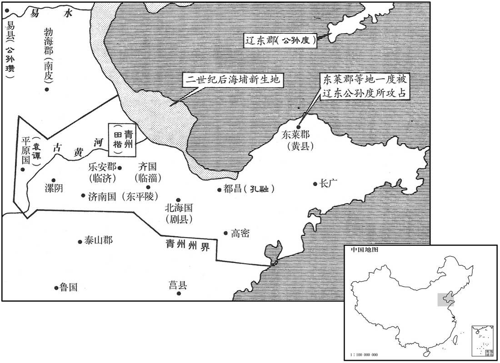
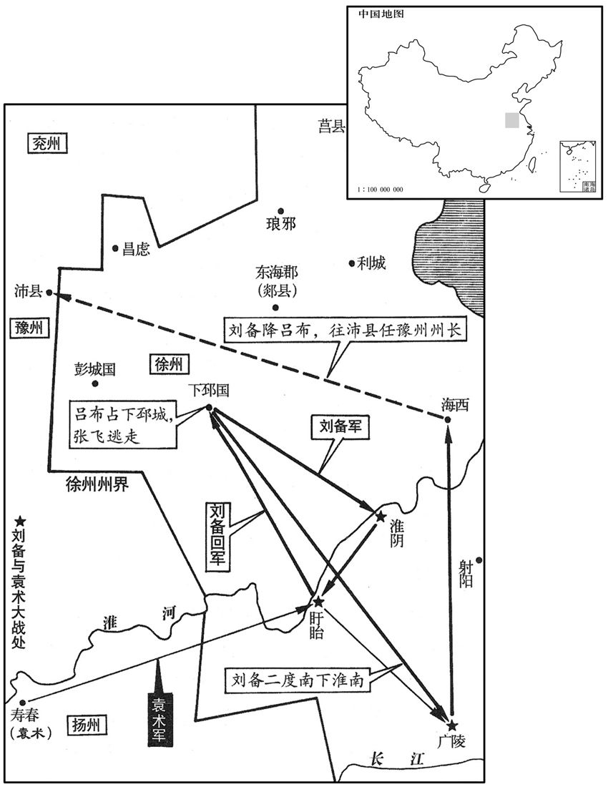
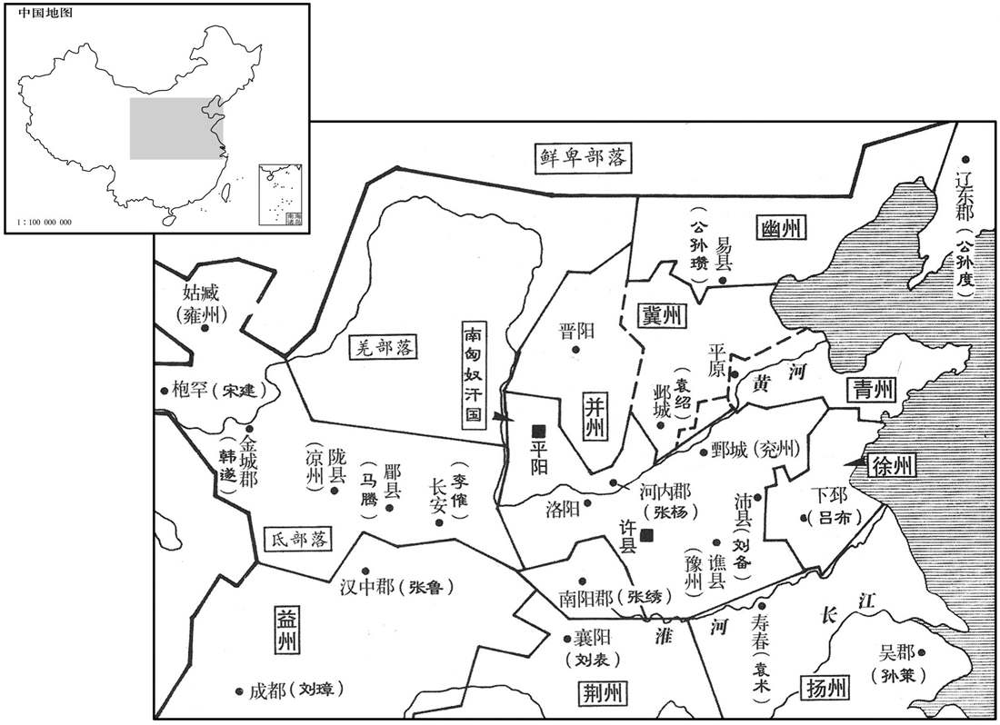
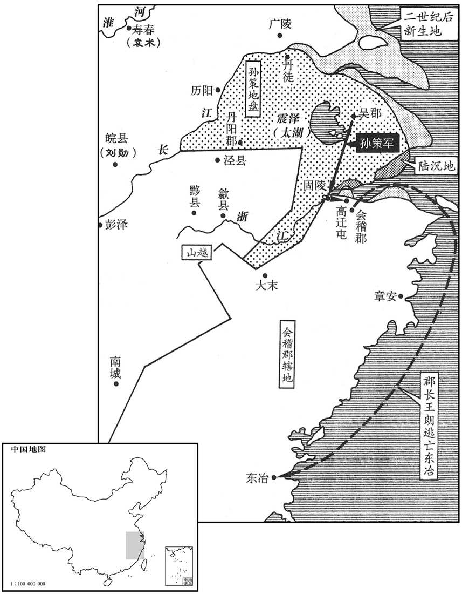
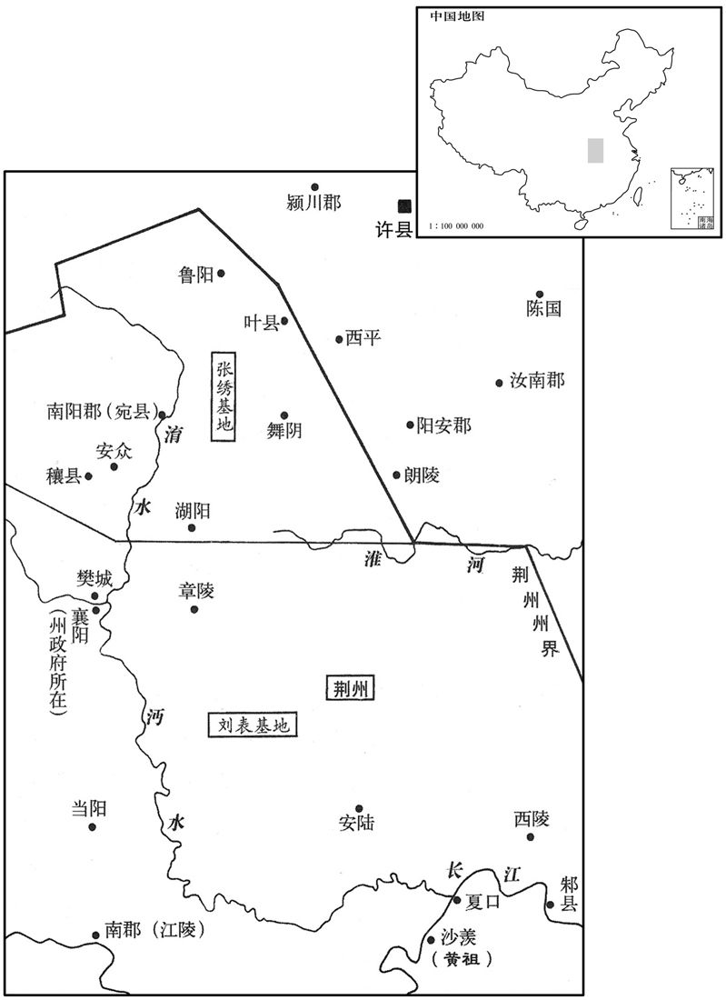
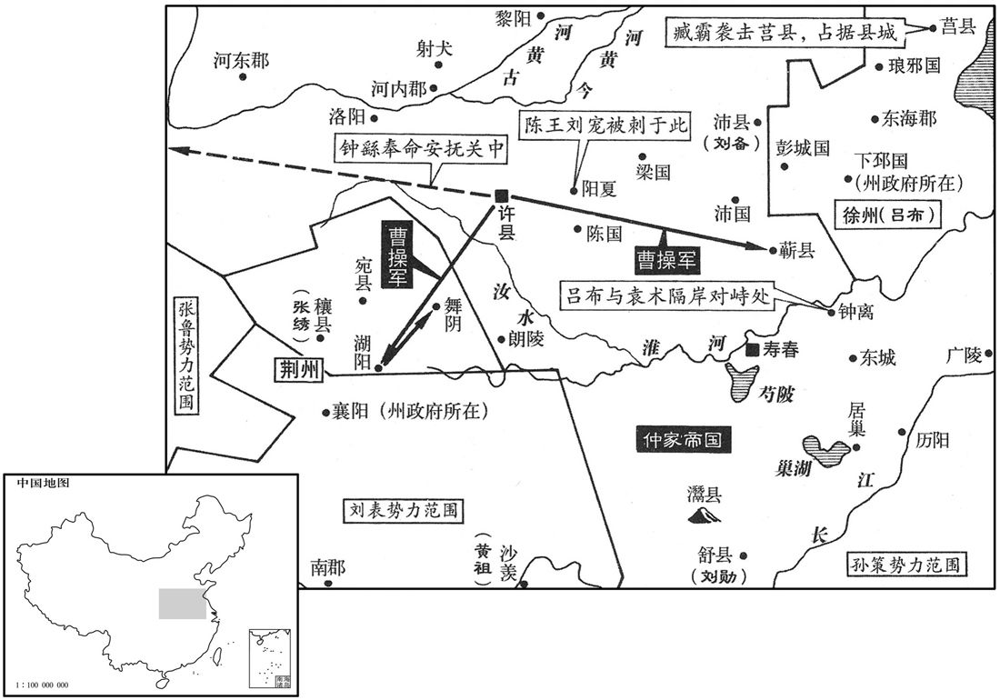
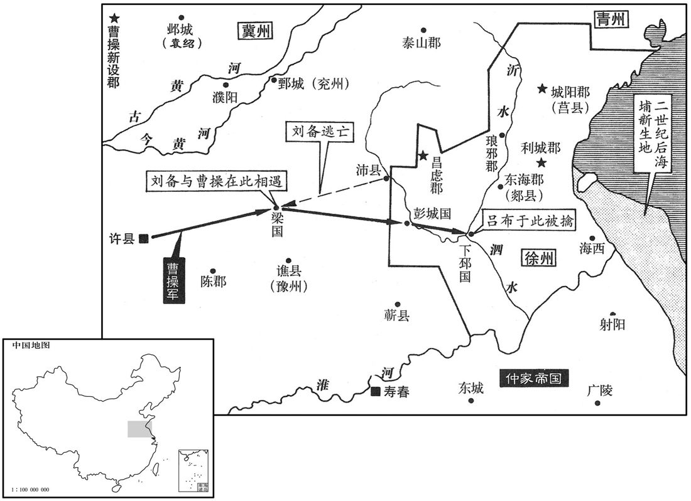

卷次与人物目录 / 卷62
资治通鉴 · 卷第六十二【汉纪五十四】
公元196年至公元198年 · 原文、白话与胡三省注
本页按胡注本编排保存全卷内容。白话采用本站所据译本，未可靠对应的内容另列说明；事件标题用于定位，并非原书文字。
本卷共86段原文，82段有译文对应，4段缺译或待核对。
卷第六十二【汉纪五十四】起柔兆困敦（丙子），尽着雍摄提格（戊寅），凡三年。
卷首原文与注释
孝献皇帝丁
公元196年 · 汉孝献皇帝建安元年
建安元年〔（丙子、一九六）〕
上传原文的注释括号有异常，字符原样保留；无法可靠划分的段落默认全文显示。
本年事件索引（现代整理）
- 大赦，改元建安
- 韩暹、杨奉争斗，董承逃往野王
- 曹操击破汝南、颍川黄巾
- 献帝应杨奉等之请东归，张杨负责修缮洛阳宫室
- 吕布乘张飞与曹豹冲突袭取下邳，刘备战败投奔吕布
- 郝萌夜袭吕布，遭高顺平定
- 杨奉、韩暹护送献帝回洛阳，张杨、曹操等受封
- 洛阳宫室尽毁，百官饥困，甚至采野菜、死于墙下
- 袁术借谶言谋称帝，阎象以周代商劝阻
- 袁术劝张范助其称霸，张承斥其只凭强力僭越
- 孙策劝袁术效忠汉室，袁术不听，孙策与之决裂
- 荀彧劝曹操迎奉献帝，曹洪受阻未能西进
- 董昭写信拉拢杨奉，杨奉表请曹操任镇东将军
- 曹操入洛阳掌权，惩治罪臣并封赏护驾功臣
- 董昭劝曹操迁都许县，献帝任命曹操为大将军
- 孙策攻占固陵，进取会稽
- 孙策夜袭高迁屯，击败王朗后收降会稽
- 孙策任用虞翻为功曹，却未能听从其劝谏
- 淳于嘉、杨彪、张喜相继免职
- 曹操征讨杨奉，杨奉南投袁术
- 袁绍任太尉却耻居曹操之下，曹操改任司空
- 荀彧推荐荀攸、郭嘉，曹操延揽荀攸为军师
- 郭嘉离开袁绍投奔曹操，二人相互赏识
- 满宠依法处置曹洪宾客，曹操称许其不徇私情
- 孔融礼遇名士郑玄等，却疏于处理政事
- 袁谭攻破孔融，孔融逃走后受曹操征用
- 袁谭起初治理有方，后来任用小人、奢纵失德
- 枣祗、任峻推行屯田，曹操积粮后得以扩张
- 吕布解刘备之围，以射戟迫使袁术退兵
- 刘备投奔曹操，郭嘉劝曹操勿因一时之患而害贤
- 吕布胁迫袁涣辱骂刘备，袁涣以德义拒绝
- 张济攻穰城中箭身亡，刘表接纳其部众
- 贾诩离开多疑的段煨，投奔张绣并劝其依附刘表
- 刘表在荆州兴办学校，杜夔劝阻其庭中奏乐
- 祢衡辱骂曹操，被送往刘表处后又因得罪黄祖遭杀
春，正月，癸酉，大赦，改元。
春季，正月，癸酉（初七），大赦天下，改年号为建安元年。

本年形势与背景参考图
董承、张杨欲以天子还雒阳，杨奉、李乐不欲，由是诸将将更相疑贰。〔更，工衡翻下更有同。〕二月，韩暹攻董承，承奔野王。〔野王，张杨所屯也。暹，息廉翻。〕韩暹屯闻喜，胡才、杨奉之坞乡。〔郡国志：河南缑氏县西南有坞聚。〕胡才欲攻韩暹，上使人喻止之。
董承、张杨打算护送献帝回洛阳，杨奉、李乐不同意，于是将领们进一步相互猜疑。二月，韩暹进攻董承，董承败走，投奔驻在野王的张杨。韩暹驻军闻喜，胡才、杨奉率军前往坞乡。胡才准备进攻韩暹，献帝派人传旨，阻止他进军。
汝南、颍川黄巾何仪丢拥众附袁术，曹操击破之。
两版字句有差异，建议核对原文。
汝南、颖川的黄巾军首领何仪等率众投靠袁术，曹操出军击溃何仪等。
张杨使董承先缮修雒阳宫。太仆赵岐为承说刘表，使遣兵诣雒阳，助修宫室；军资委输，前后不绝。〔为，于伪翻。说，输芮翻。委，于伪翻。流所聚曰委。毛晃曰：凡以物送之曰输，则音平声；指所送之物曰输，则音去声。委输之委，亦音去声。〕夏，五月，丙寅，帝遣使至杨奉、李乐、韩暹营，求送至雒阳，奉等从诏。六月乙未，车驾幸闻喜。
张杨派董承先去修缮被董卓烧毁的洛阳宫殿。太仆赵岐为董承去说服刘表，使刘表派兵到洛阳，协助修缮宫殿，并源源不断地输送军用物资和粮草。夏季，五月，丙寅（初二），献帝派使者到杨奉、李乐、韩暹等人营中，要求他们护送自己返回洛阳，杨奉等听从诏命。六月，乙未（初一），献帝抵达闻喜。
袁术攻刘备以争徐州，备使司马张飞守下邳，自将拒术于盱眙、淮阴，〔郡国志：盱眙、淮阴二县属下邳国。盱眙，音吁怡。〕相持经月，更有胜负。〔更，工衡翻。〕下邳相曹豹，陶谦故将也，与张飞相失，飞杀之，城中乖乱。袁术与吕布，劝令袭下邳，许助以军粮。布大喜，引军水陆下。〔布去年奔备，盖屯于下邳之西。〕备中郎将丹阳许耽开门迎之。张飞败走，布虏备妻子及将吏家口。备闻之，引还，比至下邳，〔比，必寐翻。下比相同。〕兵遗。备收余兵东取广陵，与袁术战，又败，屯于海西，〔前汉志，海西县，属东海郡；续汉志，属广陵郡。考异曰：蜀志备传于此云，「杨奉、韩暹寇徐、扬间，备邀击，尽斩之。」按暹、奉后与吕布同破袁术，于时未死也；备传为误。〕饥饿困踧，〔踧，子六翻。〕吏士相食，从事东海麋竺家财助军。备请降于布，〔降，户江翻。〕布亦忿袁术运粮不继，乃召备，复以为豫州刺史，与并势击术，使屯小沛。〔贤曰：高祖本泗水郡沛县人，及得天下，改泗水为沛郡，小沛即县。宋白曰：郡国志云：古偪阳国，汉为沛县，而沛郡理相城，以沛县为小沛。考异曰：备传云：「遣关羽守下邳」，此在布败后；备传误也。〕布自称徐州牧。
袁术进攻刘备，以争夺徐州。刘备派司马张飞守下邳，自己率军到盱眙、淮阴一带抵抗袁术。两军相持一下多月，各有胜负。下邳国相曹豹，是已故徐州牧陶谦的旧部，与张飞关系不好，被张飞杀死，下邳城中大乱。袁术写信给吕布，劝他袭击下邳，应许援助军粮。吕布大袁，率军水陆并进，向东袭击下邳。刘备部下的中郎将、丹阳人许耽打开城门，迎接吕布。张飞兵败退走，吕布俘虏了刘备的妻子儿女以及官员、将领们的家属。刘备听到消息后，率军回救，到达下邳后，全军溃散。刘备收拾残部，向东攻取广陵，与袁术交战，又被打败，退守海西。军中将士饥饿不堪，只好自相残杀，以人肉充饥。从事、东海人糜竺命出家中财产，资助军费。刘备向吕布请求投降。吕布也正忿恨袁术运粮中断，于是召刘备前来，又委任他为豫州刺史。吕布要与刘备一起进攻袁术，让刘备驻军小沛。吕布自称徐州牧。

布将河内郝萌夜攻布，布科头袒衣，走诣都督高顺营。〔科头，不冠露髻也。今江东人犹谓露髻为科头。〕顺即严兵入府讨之，萌败走；比明，萌将曹性击斩萌。
吕布的部将河内人郝萌叛变，乘夜进攻吕布，吕布未戴冠帽，袒露衣衫，逃到都督高顺营中，高顺立即率军入府讨伐郝萌，郝萌战败逃走。到天明时，郝萌部将曹性斩杀郝萌。
庚子，杨奉、韩暹奉帝东还，张杨以粮迎道路。秋，七月，甲子，车驾至雒阳，幸故中常侍赵忠宅。丁丑，大赦。八月，辛丑，幸南宫杨安殿。张杨以为己功，故名其殿曰杨安。杨谓诸将曰：「天子当与天下共之，朝廷自有公卿大臣，杨当出扞外难。」〔难，乃旦翻。〕遂还野王，杨奉亦出屯梁，〔郡国志：梁县，属河南尹，春秋之梁国也。〕韩暹、董承并留宿卫。癸卯，以安国将军张杨为大司马，杨奉为车骑将军，韩暹为大将军、领司隶校尉，皆假节钺。
庚子（初六），杨奉、韩暹护送献帝东还洛阳，张杨运输粮食，在路上迎接。秋季，七月，甲子（初一），献帝到达洛阳，住在前中常侍赵忠的家中。丁丑（十四日），大赦天下。八月，辛丑（初八），献帝到达洛阳南宫杨安殿。张杨认为献帝返回旧都是自己的功劳，所以把那座宫殿命名为杨安殿。张杨对诸将领说：“天子，是全国百姓的天子，朝廷自有公卿大臣来辅佐，我应该离开京城，做抵御外敌的屏障。”于是他返回野王，杨奉也出京驻军梁县。韩暹、董承二人留在洛阳，负责保卫洛阳与皇宫的安全。癸卯（初十），任命安国将军张杨为大司马，杨奉为车骑将军，韩暹为大将军兼任司隶校尉，都被赐予代表天子权威的符节和黄钺。

是时，宫室烧尽，百官披荆棘，依墙壁间，州郡各拥强兵，委输不至；群僚饥乏，尚书郎以下自出采电，〔续汉志：尚书侍郎三十六人，四百石。本注曰：一曹有六人，主作文书起草。蔡质汉仪曰：尚书郎初从三署诣台试，初上台称守尚书郎中，满岁称尚书郎，三年称侍郎。贤曰：电，音吕。埤苍曰：稆，自生也。电，与稆同。〕或饥死墙壁间，或为兵士所杀。
当时，宫殿都被烧毁，百官劈开荆棘，靠在墙壁间居住。州、郡长官自拥有强兵，不肯进贡。官员们又饿又乏，尚书郎以下的官员自己出去采摘野菜。有人饿死于断墙残壁之间，有人被士兵杀死。
袁术以谶言「代汉者当涂高」，自云名字应之。〔贤曰：「当涂高」者，魏也。然术自以「术」及「路」皆是涂，故云应之。〕又以袁氏出陈，为舜后，以黄代赤，德运之次，〔贤曰：陈大夫辕涛涂，袁氏其后也，五行火生土，故云以黄代赤。〕遂有僭逆之谋。闻孙坚得传国玺，〔事见五十九卷初平元年。〕拘坚妻而夺之。及闻天子败于曹阳，〔事见上卷兴平二年。〕乃会群下议称尊号；众莫敢对。主簿阎象进曰：「昔周自后稷至于交王，积德累功，参分天下有其二，犹服事殷。〔国语曰：后稷勤周，十五代而王。毛诗国风序曰：国君积行累功以致爵位。论语，孔子曰：三分天下有其二，以服事殷。〕明公虽奕世克昌，未若有周之盛；汉室虽微，未若殷纣之暴也！」术默然。
袁术认为，民间流行的一句预言“代汉者当途高”中的“途”与自己的名字“术”和表字“公路”相应，并认为袁氏的祖先出于春秋时代的陈国，是舜的后裔，舜是土德，黄色；汉是火德，赤色；以黄代赤，是五行运转顺序。于是他就有了篡位的打算。听说孙坚得到传国御玺，袁术就拘留了孙坚的妻子，强行夺下。及至他听到献帝败于曹阳的消息，就召集部下，商议称帝事宜。部下无人胆敢应对。主薄阎象进言道：“从前，周朝自始祖后稷传到文王，累积恩德，功勋卓著。三分天下，已经占有二分，但仍然臣服于殷朝。虽然您家世代为官显赫，但没有周朝当初的兴盛，汉朝王室虽然衰微，却没有殷纣王那样的暴行！”袁术听后默然不语。
术聘处士张范；〔处，昌吕翻。〕范不往，使其弟承谢之。术谓承曰：「孤以土地之广，士民之众，欲徼福齐桓，拟迹高祖，何如﹖」〔徼，一遥翻。〕承曰：「在德不在强。夫用德以同天下之欲，虽由匹夫之资而兴霸王之功，不足为难。若荀欲僭拟，干时而动，众之所弃，谁能兴之！」术不悦。
袁术征聘隐士张范，张范不肯前往，派自己弟弟张承去向袁术表示歉意。袁术对张承说：“我以土地的广阔，百姓和军队的众多，想要与齐桓公比美，以汉高祖为榜样，你觉得怎么样？”张承说：“此事在于德，而不在于强。用恩德来顺应天下百姓的希望，即使是由一个人的资本去建立霸王的事业，也不困难。如果是想篡位，违背天时而动，会为众人所抛弃，谁也不能使他兴盛起来！”袁术听后很不高兴。
孙策闻之，与术书曰：「成汤讨桀称『有夏多罪』，〔尚书汤誓曰：有夏多罪，天命殛之。夏，户雅翻。〕武王伐纣曰『殷有重罚』，〔史记：武王告诸侯曰：殷有重罚，不可不伐。〕此二主者，虽有圣德，假使时无失道之过，无由逼而取也。今主上非有恶于天下，徒以幼小，胁于强臣，异于汤、武之时也。且董卓贪淫骄陵，志无纪极，至于废主自兴，亦犹未也，而天下同心疾之，况效尤而焉者乎！〔左传曰：尤而效之，罪又甚焉。〕又闻幼主明智聪敏，有夙成之德，〔夙，早也。〕天下虽未被其恩，咸归心焉。使君五世相承，〔贤曰：安生京，京生阳，阳生逢，逢生术，凡五代。被，皮义翻。〕为汉宰辅，荣宠之盛，莫与为比，宜效忠守节，以报王室，则旦、奭之美，率土所望也。时人多惑图纬之言，妄牵非类之文，苟以悦主为美，不顾成败之计，古今所慎，可不孰虑！〔孰，与熟通。〕忠言逆耳，〔前书：张良曰：忠言逆耳，利于行。〕驳议致憎，〔贤曰：驳，杂也，议不同也；言以持异议致憎疾也。驳，北角翻。〕苟有益于尊明，无所敢辞。」术始自以为有淮南之众，料策必与己合，及得其书，愁沮发疾。〔沮，在吕翻。〕既不纳其言，策遂与之绝。
孙策听到消息后，写信给袁术说：“商汤讨伐夏桀时说：‘有夏多罪’，周武王讨伐殷纣王时说：‘殷有重罚’，商汤与周武王，虽然有圣德，但假如当时夏桀、殷纣没有失道的过失，也没有理由逼迫他们而夺取天下。如今天子并未对天下百姓犯有过失，只是因为年龄幼小，被强臣所胁迫，与商汤和周武王的时代不同。即使像董卓那样贪淫凶暴，欺上凌下，野心极大的人，也还未也废黜天子，自立为帝。而天下还是一致痛恨他，何况仿效他而做得更过分呢！又听说年幼的天子明智聪敏，有早成之德，天下虽然还未承受到他的恩泽，但全都归心于他。您家中五代连续出任汉朝的三分或辅佐大臣，荣宠的深厚，任何家族都不能相比，应该忠心耿耿，严守臣节，以报答王室。这便是周公姬旦、召公姬的美业，天下人的愿望。现在人们多被图纬之类的预言书所迷惑，望文生义，牵强附会，只求讨主人的欢心，并不考虑成败。称帝的事，从古至今都十分慎重，岂能不深思熟虑！忠言逆耳，异议招致憎恶，但只要对您有益，我一切都不敢推辞。”袁术开始时自以为拥有淮南的兵众，预料孙策一定会拥护自己。及至接到孙策的信后，因忧虑沮丧而生病。他既然没有听从孙策的意见，孙策便与他断绝了关系。
曹操在许，〔郡国志，许县，属颍川郡，帝既徙都，改曰许昌。杜佑曰：汉许昌故城，在今县南三十里。宋白曰：在今县西南四十里。〕谋迎天子。众以为「山东未定，韩暹、杨奉，负功恣睢，未可卒制。」〔睢，香萃翻。恣睢，暴戾之貌。卒，读曰猝。〕荀彧曰：「昔晋文公纳周襄王而诸侯景从，〔贤曰：左传：狐偃言于晋侯曰：「求诸侯莫如勤王，诸侯信之，且大义也。」晋侯以左师逆王，王入于王城，取太叔于温，杀之于隰城，遂定霸业，天下服从。师古曰：景从，言如景之从形也。〕汉高祖为义帝缟素而天下归心。〔事见九卷高祖三年。为，于伪翻。〕自天子蒙尘，〔蒙，冒也，言播越在草莽，蒙冒尘埃也。〕将军首唱义兵，徒以山东扰乱，未遑远走赴。今銮驾旋轸，〔郑玄注周礼曰：轸，车后横木也。〕东京榛芜，义士有存本之思，兆民怀感旧之哀。诚因此时，奉主上以从人望，大顺也；秉至公以服天下，大略也；扶弘义以致英俊，大德也。四方虽有逆节，其何能为，韩暹、杨奉，安足恤哉！若不时定，使豪杰生心，后虽为虑，亦无及矣。」操乃遣扬武中郎将曹洪将兵西迎天子，〔西汉有中郎将，东汉分置三署、虎贲、羽林中郎将，建安之后，群雄兵争，自相署置，始有名号中郎将。〕董承等据险拒之，洪不得进。〔考异曰：魏志此事在正月，而荀彧传迎天子在都雒后。今从传。〕
曹操在许县，计划迎接献帝。部下众人都认为：“崤山以东尚未平定，而且韩暹、杨奉等人自认为护驾有功，骄横凶暴，不能迅速制服。”荀说：“以前，晋文公重耳迎纳周襄王，各国一致推举他为霸主；汉高祖为义帝发丧，身穿孝服，使得天下百姓诚心归附。自从天子流离在外，将军首先倡导兴起义军，只因崤山以东局势混乱，来不及远行迎驾。如今献帝返回旧京，但洛阳荒废，忠义之士希望能保全根本，黎民百姓也怀念旧的王室，为之悲伤。借此时机，奉迎天子以顺从民心，是最合乎时势的行动；用大公无私的态度使天下心悦诚服，是最正确的策略；坚守君臣大义，辅佐朝廷，召揽天下英才，是最大的德行。这样，尽管四方还有不遵从朝廷的叛逆，但他们能有什么作为？韩暹、杨奉之辈，有什么值得顾虑！如果不及时决定，使别的豪杰生出奉迎的念头，以后尽管再费心机，也来不及了。”于是曹操派遣扬武中郎将曹洪率兵向西，到洛阳迎接献帝。董承等扼守险要阻拦，曹洪不能前进。
议郎董昭，以杨奉兵马最强而少党授，〔少，诗沼翻。〕作操书与奉曰：「吾与将军闻名慕义，便推赤心。今将军拔万乘之艰难，反之旧都，〔乘，绳证翻。〕翼佐之功，超世无畴，何其休哉！方今群凶猾夏，〔孔安国曰：猾，乱也。夏，华夏。夏，户雅翻。〕四海未宁，神器至重，事在维辅；必须众贤以清王轨，诚非一人所能独建，心腹四支，实相恃赖，一物不备，则有阙焉。将军当为内主，吾为外援，今吾有粮，将军有兵，有无相通，足以相济，死生契阔，相与共之。」〔毛苌曰：契阔，勤苦也；此盖谓死也，生也，处勤苦之中，相与共之也。契，苦结翻。〕奉得书喜悦，语诸将军曰：「兖州诸军近在许耳，有兵有粮，国家所当依仰也。」〔语，牛倨翻。仰，牛向翻。〕遂共表操为镇东将军，袭父爵费亭侯。〔操祖曹腾封费亭侯，养子嵩袭爵，今以操袭嵩爵也。郡国志：沛国酇县有费亭，曹腾所封也。应劭曰：酇，音嵯。师古曰：王莽改酇曰赞治，则此县亦有赞音。晋地道记：山阳郡湖陵县西有费亭城，魏武帝初所封。考异曰：魏志在六月，而董昭传在都雒后。今从传。〕
议郎董昭认为杨奉的兵马最强，但缺少外援，就用曹操的名义给杨奉写信说：“我与将军相互倾慕，只听到名声，便已推心置腹。如今，将军在艰难之中救出天子，护送他回到旧都洛阳，卫护辅佐的功勋，盖世无双，是何等的美业！现在，各地不法之徒扰乱中原，天下不宁，君主的平安至关重要，事情主要靠辅佐大臣。所有的贤明之士必须一齐努力，才能肃清君王道路上的障碍，这决不是一个人的力量所能办得到的。心脏、胸腹与四肢，实际是互相依存的，缺少了任何一件，都不完整。将军应当在朝廷主持事务，我则作为外援，如今我有粮草，将军有兵马，互通有无，足以相辅相成，我们生死与共，祸福同当。”杨奉接到信后十分高兴，对其他将领说：“兖州的军队，近在许县，有兵有粮，朝廷正可以倚靠他们。”于是诸将联名上表推荐曹操担任镇东将军，并承袭他父亲曹嵩的爵位费亭侯。
韩暹矜功专恣，董承患之，因潜召操；操乃将兵诣雒阳。既至，奏韩暹、张杨之罪。暹惧诛，单骑奔杨奉。帝以暹、杨有翼车驾之功，诏一切勿问。辛亥，以曹操领司隶校尉、录尚书事。操于是诛尚书冯硕等三人，讨有罪也；〔袁宏纪曰：诛硕及议郎侯祈、侍中壸崇。〕封卫将军董承等十三人为列侯，赏有功也；〔宏纪曰：封卫将军董承、辅国将军伏完、侍中丁□、种辅（辑）、尚书仆射锺繇、尚书郭溥、御史中承董芬、彭城相刘艾、冯翊韩斌、东郡太守杨众、议郎罗卲、伏德、赵蕤为列侯。〕赠射声校尉沮为弘农太守，矜死节也。〔沮死，事见上卷兴平二年。沮，子余翻。〕
韩暹倚仗护驾有功，专横霸道，董承对他十分厌恨，就私下派人召请曹操。于是曹操亲率大军到达洛阳。到达后，向献帝奏报韩暹、张杨的不法行为。韩暹害怕被杀，单人匹马投奔杨奉。献帝认为韩暹、张杨护驾有功，下诏一切不予追究。辛亥（十八日），命曹操兼任司隶校尉，主持尚书事务。于是曹操诛杀尚书冯硕等三人，处罚他们犯下的罪过；封卫将军董承等十三人为列侯，奖赏他们护驾有功；追赠射声校尉沮俊为弘农太守，哀怜他为国尽节而死。
操引董昭并坐，问曰：「今孤来此，当施何计﹖」昭曰：「将军兴义兵以诛暴乱，入朝天子，辅翼王室，此五霸之功也。此下诸将，人殊意异，未必服从，今留匡弼，事势不便，惟有移驾幸许耳。然朝廷播越，新还旧京，远近跂望，〔跂，渠宜翻，举足也。〕冀一朝获安，今复徙驾，不厌众心。〔复，扶又翻。厌，于謟翻，又如字。〕夫行非常之功，愿将军算其多者。」〔凡举事有刘亦有害，惟算其利多而害少者行之。〕操曰：「此孤充志也。杨奉近在梁耳，闻其兵精，得无为孤累乎﹖」〔累，力伪翻；下同。〕昭曰：「奉少党援，心相凭结，镇东、费亭之事，皆奉所定，宜时遣使厚遗答谢，以安其意。〔少，诗沼翻。遗，于季翻。〕说『京都无粮，欲车驾暂幸鲁阳，〔鲁阳县，属南阳郡。〕鲁阳近许，转运稍易，〔近，其靳翻。易，以豉翻。〕可无县乏之忧。』〔县，读曰悬。〕奉为人勇而寡虑，必不见疑，比使往来，〔比，必寐翻。使，疏吏翻。〕足以定计，奉何能为累！」操曰：「善！」即遣使诣奉。庚申，车驾出轘辕而东，〔河南缑氏县有轘辕关。轘，音环。〕遂迁都许。己巳，幸曹操营，以操为大将军，封武平侯。〔武平县，属陈国。此取其以神武平祸乱也。宋白曰：毫州鹿邑县，后汉于今县东北置武平县，隋改为鹿邑，取故鹿邑城为名，其古鹿邑城在县西十三里，春秋鹿鸣地也。〕始立宗庙社稷于许。
曹操请董昭与自己并坐在一起，问他：“现在我已到洛阳，应当采取什么策略？”董昭说：“将军兴起义兵，讨伐暴乱，入京朝见天子，辅佐王室，这是春秋时期五霸的功业。现在洛阳的各位将领，都有自己的打算，未必听从将军的指挥。如今留在洛阳控制朝政，有许多不利因素，只有请天子移驾到许县这个办法最好。但是天子在外流离多时，刚回到旧都城，远近都盼望迅速获得安定，如今再要移驾，是不符合民心的。不过，只有做不同寻常的事情，才能建立不同寻常的功业，希望将军作出利多弊少的选择。”曹操说：“我本来的计划就是这样的。只是杨奉近在梁县，听说他兵强马壮，该不会阻挠我吗？”董昭说：“杨奉缺少外援党羽，所以他愿与将军结交。任命您为镇东将军、封费亭侯的事情，都是杨奉的主意，应该及时派遗使者带去重礼表示感谢，使他安心。并告诉他说：‘洛阳无粮，想让献帝暂时移驾鲁阳，鲁阳靠近许县，运输较为便利，可以免去粮食匮乏的忧虑’杨奉这个人有勇无谋，一定不会疑心，在使者往来期间，足以定下大计，杨奉怎能进行阻挠！”曹操说：“很好！”立即派使者去晋见杨奉。庚申（二十七日），献帝车驾出辕关，向东行进，于是迁都于许县，改称许县为许都。己巳（疑误），献帝抵达曹操军营，任命曹操为大将军，封武平侯。平始在许都建立祭祀皇家祖先的宗庙与作为国家象征的祭祀土、谷之神的社稷。
孙策将取会稽。〔会，工外翻。〕吴人严白虎等众各万余人，处处屯聚，诸将欲先击白虎等。策曰：「白虎等群盗，非有大志，此成禽耳。」遂引兵渡浙江。〔浙，之舌翻。〕会稽功曹虞翻说太守王朗曰：「策善用兵，不如避之。朗不从。发兵拒策于固陵。
孙策打算攻取会稽郡。这时，吴郡人严白虎等，各有部众万余人，在各处建有许多堡寨。诸将领想先攻击严白虎等，孙策说：“严白虎等人不过是一群强盗，没有大志，他们容易对付。”于是率军渡过浙江。会稽功曹虞翻劝太守王郎说：“孙策善于用兵，不如先躲避一下他的锐气。”王朗不听，发兵据守固陵，抵抗孙策。

策数渡水战，不能克。策叔父静说策曰：「朗负阻城守，难可卒拔。查渎南去此数十里，宜从彼据其内，〔说，输芮翻。数，所角翻。卒，读曰猝。水经注：浙江东径固陵城北。昔范蠡筑城于浙江之滨，言可以固守，谓之固陵，今之西陵也。浙江又东径柤塘，谓之柤渎，孙策袭王朗所从出之道也。裴松之曰：查，音祖加翻。〕所谓攻其无备，出其不意者也。」策从之，夜，多然火为疑兵，分军投查渎道袭高迁屯。〔裴松之曰：按今永兴县有高迁桥。沈约曰：永兴本汉余暨县，吴更名。蔡邕尝经会稽高迁亭，取椽竹以为笛，即其处也。〕朗大惊，遣故丹阳太守周昕等帅兵逆战，〔帅，读曰率。〕策破昕等，斩之。朗遁走；虞翻追随营护朗，浮海至东冶，〔前汉志：冶县，属会稽郡。师古曰：故闽越地；光武改曰章安。晋志曰：建安郡故秦闽中郡，汉高祖五年，以立闽越王；及武灭之，徙其人，名为东冶；后汉改为候官都尉；及吴，置建安郡。洪氏隶释据西汉志曰：会稽西部都尉治钱唐，南部都尉治回浦。李宗谔图经曰：文帝时，以山阴为都尉治；元狩中，徙治钱唐，为西部；元鼎中，又立东部都尉，治冶；光武改回浦为章安，以冶立东候官。吴孙亮传曰：五凤中，以会稽东部为临海郡。孙休传：永安中，以会稽南部为建安郡。沈约宋志曰：东阳太守本会稽西部都尉。又曰：临海太守本会稽东部都尉。前汉都尉治鄞，后汉分会稽为吴郡，疑是都尉徙治章安。续汉志：章安故冶，光武更名。晋太康记：本鄞县南之回浦乡，章帝立。未详孰是。又曰：司马彪云：章安是故冶。然则临海亦冶地也。张勃吴录曰：是句践冶铸之所，后分为会稽东、南二部都尉：东部，临海是也；南部，建安昃也。杜佑通典曰：后汉改冶县为候官都尉，后分冶县为会稽东南二都尉，今福州是南部，台州是东部。又曰：二汉会稽西部都尉理婺州。数说异同，各有脱误，尝参订之。自秦置会稽郡，其治在今吴门；至顺帝分置吴郡，而会稽徙郡于山阴。以浙江为两郡之境，故钱唐在西汉时属会稽，所以为西部治所；及会稽移于浙东，则西部亦移于婺女。回浦后改章安，乃会稽之东部，今台州盖其地。冶县则是南部，在吴属建安郡，至唐遂为福州。太康记尝云：回浦本鄞之南乡，或云东部治鄞，因致休文之疑。然鄞及回浦皆西汉县名，谓西汉割鄞而置县，或未可知。至章帝时，回浦已非乡矣。太康所纪，亦误也。前志注会稽之冶县云：本闽越地。续志曰：章安，故冶，闽越地，光武更名。因脱其中数字，故刘昭补注惑于太康记，而休文复不能剖判也。当云章安故回浦，章帝更名；东候官，故冶，闽越地，光武更名：于文乃足。此郡之末有「东部侯国」四字，却是衍文，侯与候相近，而南部所治，故文有错乱。班史注回浦为南部。司马彪谓章安是故冶，张勃谓分冶为东、南二都尉，杜佑谓二汉西部皆在婺女，图经以冶为东部，皆误也。余按洪说甚详，其言钱唐，时属会稽，所以为西部治所，此语亦恐有未安处。〕策追击，大破之，朗乃诣策降。〔降，户江翻。〕
孙策几次渡水作战，都未能取胜。他的叔父孙静对他说：“王朗据守坚城，很难一下攻破。从这里向南数十里是查渎，应从那里进入王朗的后方，这正是兵法上讲的：攻其无备，出其不意。”孙策采纳这个建议。夜里，点燃许多火把，作为疑兵。然后，派出一支部队从查渎道进袭高迁屯。王朗大惊，派前丹阳郡太守周昕等率军迎战，孙策打败周昕等人，斩周昕。王朗逃走，虞翻追随，掩护王朗，乘船渡海逃到东冶。孙策追击他们，大破王朗军，王朗只好向孙策投降。
策自领会稽太守，复命虞翻为功曹，待以交友之礼。策好游猎，〔好，呼到翻。〕翻谏曰：「明府喜轻出微行，从官不暇严，〔喜，许记翻。从，才用翻。〕吏卒常苦之。夫君人者不重则不威，〔重，尊重。威，威严。言不尊重，则无威严。〕故白龙鱼服，困于豫且；〔张衡东京赋之辞，注云：说苑曰：吴王欲从民饮酒，伍子胥谏曰：「不可。昔白龙下清泠之渊，化为鱼，渔者豫且射中其目。白龙上诉天帝。曰：『当是之时，若安置而形﹖』白龙对曰：『我下清泠之渊，化为鱼。』天帝曰：『鲁固人之所射也，豫且何罪！』夫白龙，天帝贵畜也；豫且，宋国之贱臣也。白龙不化，豫且不射。今弃万乘之位而从布衣之士饮酒，臣恐其有豫且之患矣。」王乃止。且，子余翻。〕白蛇自放，刘季害之。〔事见七卷秦二世元年。〕愿少留意！」〔少，诗沼翻。〕策曰：「君言是也。」然不能改。〔为策死于轻出张本。〕
孙策自己兼任会稽郡太守，仍委任虞翻为功曹，用朋友的礼节对待他。孙策喜欢外出打猎，虞翻劝阻他说：“您喜欢轻装便服出行，随从官员来不及警戒，兵士们常常感到辛苦，身为长官，如不够稳重，就不容易树立权威。所以传说中的白龙，一旦变为鱼，普通的渔夫豫且就可射它；而白蛇自己放纵，被汉高祖刘邦杀死。请您稍加留心。”孙策说：“你说得对。”但他仍不能改这个习惯。
九月，司徒淳于嘉、太尉杨彪、司空张喜皆罢。
九月，司徒淳于嘉、太尉杨彪、司空张喜被免职。
车驾之东迁也，杨奉自梁欲邀之，不及。冬，十月，曹操征奉，奉南奔袁术，遂攻其梁屯，拔之。
曹操护送献帝从洛阳向东迁到许县时，杨奉从梁地出兵想要阻拦，但未来得及。冬季，十月，曹操出兵征讨杨奉，杨奉向南投奔袁术，曹操攻陷了杨奉在梁地的营寨。
诏书下袁绍，责以「地广兵多，而专自树党，〔下，假稼翻；下之下同。树党，谓以子谭为青州刺史，熙为幽州刺史，外甥高干为并州刺史。〕不闻勤王之师，但擅相讨伐。」〔谓与公孙瓒相攻也。〕绍上书深自陈愬。戊辰，以绍为太尉，封邺侯。绍耻班在曹操下，怒曰：「曹操当死数矣，〔数，所角翻；下同。〕牛辄救存之，〔操自荥阳汴水之败，收兵从绍于河内，绍表为东郡太守；吕布袭取兖州，绍复与操连和，欲令其遣家居邺也。〕今乃挟天子以令我乎！」表辞不受。操惧，请以大将军让绍。丙戌，以操为司空，行车骑将军事。
献帝下诏给袁绍，责备他：“地广兵多，但专门结党营私，没听说有勤王救驾的军队出动，只是擅自互相讨伐。”袁绍上书，深自谴责和辩解。戊辰（疑误），任命袁绍为太尉，封邺侯。袁绍耻于自己的官位在曹操之下，大发雷霆，说：“曹操几次要死了，都是我救了他。现在他竟挟持天子，对我来发号施令！”上书辞让，拒绝接受。曹操感到害怕，请求把自己担任的大将军一职授予袁绍。丙戌（疑误），任命曹操为司空，代行车骑将军职务。
操以荀彧为侍中，守尚书令。操问彧以策谋之士，彧荐其从子蜀郡太守攸〔攸既免董卓之祸，复辟公府，举高第，迁任城相，不行；以蜀险固，人民殷盛，求为蜀郡太守，道绝，不得至，驻荆州。从，才用翻；下同。〕及颍川郭嘉。操征攸为尚书，与语，大悦，曰：「公达，非常人也。〔荀攸，字公达。〕吾得与之计事，天下当何忧哉！」以为军师。
曹操委任荀为侍中，代理尚书令。曹操请荀推荐出谋划策之士，荀推荐自己的侄子、蜀郡太守荀攸和颖川人郭嘉。曹操征召荀攸为尚书，和他谈话后，大为高兴，说：“荀攸不是寻常之人，我能与他商议大事，天下会有什么可忧虑的呢！”任用荀攸为军师。
初，郭嘉往见袁绍，绍甚敬礼之，居数十日，谓绍谋臣辛评、郭图曰：「夫智者审于量主，〔量，音良。〕故百全而功名可立。袁公徒欲效周公之下士，而不知用人之机，多端寡要，好谋无决，欲与共济天下大难，定霸王之业，难矣。〔好，呼到翻。大难，乃旦翻。〕吾将更举而求主，〔更，工衡翻，改也。〕子盍去乎！」二人曰：「袁氏有恩德于天下，人多归之，且今最强；去将何之！」嘉知其寤，不复语，〔复，扶又翻。〕遂去之。操召见，与论天下事，喜曰：「使孤成大业者，必此人也！」嘉出，亦喜曰：「真吾主也！」操表嘉为司空祭酒。〔陈寿三国志作「司空军祭酒」，此逸「军」字。晋志曰：当涂得志，潜平诸夏，初置军师祭酒，参掌戎律。〕
起初，郭嘉去见袁绍，袁绍对他十分礼敬。郭嘉住了几十天，对袁绍的谋臣辛评、郭图说：“有智之士要审慎地选择主人，才能保全自己，建立功业。袁绍只想仿效周公姬旦礼贤下士，却不懂得用人的方法。事务繁杂，却缺少重点；喜欢谋略，但又优柔寡断。要与他共同拯救天下的大难，建立霸王之业，太困难了。我将另投明主，你们为何不离去呢？”辛评、郭图说：“袁氏家族对天下有恩德，人们多来归附，而且现在他的势力最强，还要去投奔谁？”郭嘉知道他们执迷不悟，便不再说，于是离去。曹操召见郭嘉，与他谈论天下大事，高兴地说：“使我成就大业的，一定就是此人！”郭嘉出来后，也高兴地说：“这真是我的主人！”曹操上表推荐郭嘉为司空祭酒。
操以山阳满宠为许令，操从弟洪，有宾客在许界数犯法，宠收治之，洪书报宠，〔报，告也。前书，霍显曰：「少夫幸报我以事。」数，所角翻。治，宜之翻。〕宠不听。洪以白操，操召许主者，〔主者，许县主史也。〕宠知将欲原客，乃速杀之。操喜曰：「当事不当尔邪！」
曹操委任山阳人满宠为许都行政长官。曹操堂弟曹洪门下的宾客在许都境内屡次犯法，满宠逮捕宾客进行审讯。曹洪写信向满宠求情，满宠不理。曹洪报告了曹操，于是曹操召见许都的主要官员。满宠知道将要教他释放宾客，便迅速将宾客处死。曹操高兴地说：“负责的官员，难道不该这样做吗！”
北海太守孔融，负其高气，志在靖难，而才疏意广，讫无成功。〔讫，竟也，终也。难，乃旦翻。〕高谈清教，盈溢官曹，辞气清〔【章：甲十一行本「清」作「温」；乙十一行本同；孔本同；熊校同。】〕雅，可玩而诵，论事考实，难可悉行。但能张磔网罗，〔磔，陟格翻，开也。〕而目理甚疏；造次能得人心，〔造，七到翻。〕久久亦不愿附也。其所任用，好奇取异，多剽轻小才。〔好，呼到翻。剽，匹妙翻。轻，墟正翻。〕至于尊事名儒郑玄，执子孙礼，易其乡名曰郑公乡，〔玄传曰：融深敬玄，告高密县为玄特立一乡，曰：「昔齐置士乡，越有君子军，皆异贤之意也。太史公、廷尉吴公、谒者仆射邓公，皆汉之名臣。又南山四皓，有园公、夏黄公，世嘉其高，皆悉称公。然则公者，仁德之正号，不必皆三事大夫也。今郑君乡，宜曰郑公乡。」〕及清儁之士左承祖、刘义逊等，皆备在座席而已，不与论政事，曰：「此民望，不可失也！」
北海郡太守孔融，以才气出众自负，立志平定祸乱。但他志大才疏，一直没有成效。他高谈阔论，盈溢官府，谈吐优雅，可使人玩味传诵，但把他的议论具体实施，却很难全行得通。他只会口出大言，而漏洞很多。他一时可得人心，但久而久之，人们便不愿再依附。他所任用的官员，好标新立异，多数是耍小聪明的轻浮之人。孔融尊奉大儒郑玄，以子孙之礼对待郑玄，把郑玄所居住的乡改名为郑公乡。对其他有名望的清俊之士左承祖、刘义逊等，全都只当作宾客奉陪在座而已，不与他们讨论国家政事，他说：“这是人民尊敬的人物，不能失去他们。”
黄巾来寇，融战败，走保都昌。〔贤曰：都昌县，属北海郡，故城在今青州临朐县东北。〕时袁、曹、公孙首尾相连，融兵弱粮寡，孤立一隅，不与相通。左承祖劝融宜自托强国，融不听而杀之，刘义逊弃去。青州刺史袁谭攻融，自春至夏，战士所余纔数百人，流矢交集，而融犹隐几读书，谈笑自若。〔隐，于靳翻。贤曰：隐，凭也。〕城夜陷，乃奔东山，〔都昌县之东山也。〕妻子为谭所虏。曹操与融有旧，征为将作大匠。
黄巾军来进攻北海郡，孔融战败，退守都昌。当时，袁绍、曹操、公孙瓒等的势力范围相互连接，孔融兵力薄弱，粮草不足，孤立在一个角落，与他们不相来往。左承祖劝孔融，应自己选择一个较大的势力作为依靠。孔融没有听从，反而将他杀死。刘义逊因此背弃孔融，离开北海郡。青州刺史袁谭进攻孔融，从春到夏，孔融部下只剩数百名战士，乱箭四飞，孔融却还靠在案几上读书，谈笑自若。都昌城在夜里被攻破，孔融这才逃往东山，他的妻子儿女都被袁谭俘虏。曹操与孔融是老友，就征召他到朝廷担任将作大匠。
袁谭初至青州，其土自河而西，不过平原。谭北排田楷，〔田楷，公孙瓒用为青州刺史。〕东破孔融，威惠甚着；其后信任群小，肆志奢淫，声望遂衰。
袁谭刚到青州时，在黄河以西的疆界，不超过平原县。他向北攻击公孙瓒委任的青州刺史田楷，向东又攻破北海郡太守孔融，威望和惠政十分突出。但他后来信任一些奸佞小人，纵欲肆志，骄奢淫逸，声望便衰落了。
中平以来，天下乱离，民弃农业，诸军并起，率乏粮谷，无终岁之计，饥则寇掠，饱则弃余，瓦解流离，无敌自破者，不可胜数。〔胜，音升。〕袁绍在河北，军人仰食桑椹，〔仰，牛向翻。椹，桑实也；其始生也，色青，熟则色黑，可食。椹，音甚。〕袁术在江淮，取给蒲蠃，〔蠃，蚌属，卢戈翻。〕民多相食，州里萧条。羽林监枣祗请建置屯田，〔颍川文士传：枣氏，本姓棘，避难改焉。汉官：羽林有左右监，秩六百石，属光禄勋。〕曹操从之，以祗为屯田都尉，以骑都尉任峻为典农中郎将。〔魏志曰：曹公置典农中郎将，秩二千石；典农都尉，秩六百石或四百石。典农校尉，秩比二千石，所主如中郎；所主部分别而少为校尉。〕募民屯田许下，得谷百万斛。于是州郡例置田官，所在积谷，仓廪皆满。故操征伐四方，无运粮之劳，遂能兼并群雄。军国之饶，起于祗而成于峻。
汉灵帝中平年以来，天下混乱分裂，百姓无法从事农业生产。各地纷纷组织军队，但都缺乏粮草，没有一年的储备。饥饿时就抢掠，吃饱后就扔掉剩下的粮食。军队分崩离析，未受攻击就自行瓦解的，数不胜数。袁绍在河北，军士靠吃桑椹度日；袁术在长江、淮河之间，以蛤蚌为食。很多百姓互相残杀，用人肉充饥，各地都是一片萧条景象。羽林监枣祗请求建立屯田制度，曹操采纳了他的建议。曹操委任枣祗为屯田都尉，委任骑都尉任峻为典农中郎将。召募百姓在许都周围屯田，收获谷物一百万斛。于是州、郡依照规定设置主管屯田的官员，各地存粮都装满了仓库。所以曹操出兵征战四方，无须运粮的劳苦，便能兼并各地方割据势力。军队与国家的富裕，是由枣祗创业，而由任峻完成的。
袁术畏吕布为己害，乃为子求婚，布复许之。〔乃为，于伪翻。复，扶又翻。〕术遣将纪灵等步骑三万攻刘备，备求救于布。诸将谓布曰：「将军常欲杀刘备，今可假手于术。」布曰：「不然。术若破备，则北连泰山诸将，〔泰山诸将谓臧霸、孙观、吴敦、尹礼辈。〕吾为在术围中，不得不救也。」便率步骑千余驰往赴之。灵等闻布至，皆敛兵而止。布屯沛城西南，遣铃下请灵等，〔铃下，卒也，在铃阁之下，有警至则掣铃以呼之，因以为名。续汉志曰：五百、铃下，侍阁、门阑部署、街里走卒，皆有程品，多少随所典领。程大昌续演繁露曰：铃下威仪，殆今典客之吏。〕灵等亦请布，布往就之，与备共饮食。布谓灵等曰：「玄德，布弟也，〔刘备，字玄德。〕为诸君所困，故来救之。布性不喜合鬬，喜解鬬耳。」〔言不喜合人之鬬，喜解人之鬬也。喜，许记翻。〕乃令军候植戟于营门，布弯弓顾曰：「诸君观布射戟小支，〔贤曰：周礼考工记曰：为戟，博二寸，内倍之，胡参之，援四之。郑注云：援直刃，胡其孑也。小支，谓胡也，即今之戟旁曲支。植，直吏翻，立也。射，而亦翻。〕中者当各解兵，不中可留决鬬。」布即一发，正中戟支。〔中，竹仲翻；下同。〕灵等皆惊，言：「将军天威也！」明日复欢会，然后各罢。
袁术害怕吕布危害自己，就为儿子向吕布女儿求婚，吕布答应了。袁术派遣部将纪灵等率领步、骑兵三万进攻刘备，刘备向吕布求救。吕布属下的将领们对吕布说：“将军一直想杀刘备，这次可以借袁术的手来实现。”吕布说：“不然。袁术如果击溃刘备，就可以向北联络泰山的诸将领，我就将陷入袁术的包围之中，因此不能不救刘备。”吕布便率领步、骑兵一千余人急速赶赴刘备处。纪灵等听说吕布前来，都收兵回营，停止攻战。吕布驻军沛城西南，派遣侍卫去请纪灵等人，纪灵等也派人来请吕布，吕布就前往纪灵营中，邀请刘备一起赴宴。吕布对纪灵等人说：“刘玄德是我的弟弟，被你们围困，所以我来救他。我生性不喜欢聚合别人争斗，只喜欢化解别人的争斗。”于是命令军官把铁戟竖立在营门，吕布拉满了弓，对旁观的人说：“你们看我射戟头旁边的戟支，如果射中，你们就各自罢兵，如果不中，你们可以留下厮杀。”吕布随即射了一箭，正中戟支。纪灵等全都大吃一惊，说：“将军真是天赋神威！”第三天，又设酒欢宴，然后各自班师。
备合兵得万余人，布恶之，〔复，扶又翻。恶，乌路翻。〕自出兵攻备；备败走，归曹操，操厚遇之，以为豫州牧。或谓操曰：「备有英雄之志，今不早图，后必为患。」操以问郭嘉，嘉曰：「有是。然公起义兵，为百姓除暴，〔为，于伪翻。〕推诚杖信以招俊杰，犹惧其未也。今备有英雄名，以穷归己而害之是以害贤为名也。如此，则智士将自疑，回心择主，公谁与定天下乎！夫除一人之患以沮四海之望，安危之机也，不可不察。」〔沮，在吕翻。考异曰：傅子以为程昱、郭嘉劝操杀备。今从魏书。〕操笑曰：「君得之矣！」遂益其兵，给粮食，使东至沛，收散兵以图吕布。
刘备集合起一万余人的部队，吕布认为受到了威胁，就亲自出兵攻打刘备。刘备败走，投奔曹操。曹操对他的待遇十分优厚，又让朝廷任命他为豫州牧。有人对曹操说：“刘备有英雄大志，如今不趁早除掉他，必然会有后患。”曹操为此征询郭嘉的意见，郭嘉说：“这种说法是对的。但是，您兴起义兵，为百姓除暴，诚心诚意地招募天下英雄豪杰，还惟恐他们不来。如今刘备有英雄之名，因走投无路前来投靠，而您却杀掉他，这将会使您得到谋害贤才的恶名。果真如此，有才智的人士将各自疑虑，改变心意，另选主人，您还去和谁一起平定天下！因除去一个人的祸患，而失去天下人的期望，这是关系今后安危的关键，您不可不仔细考虑。”曹操笑着说：“你分析得很对。”于是拨给刘备一些军队，供应粮草，让他往东到小沛一带，集合被击溃的残部，与吕布对抗。
初，备在豫州，举陈郡袁涣为茂才。〔武帝元封六年，诏州郡举茂才。茂才，即秀才也，避光武讳，史遂书为茂才。〕涣为吕布所留，布欲使涣作书骂辱备，涣不可，再三强之，不许。〔强，其两翻。〕布大怒，以兵胁涣曰：「为之则生，不为则死！」涣颜色不变，笑而应之曰：「涣闻唯德可以辱人，不闻以骂！使彼固君子邪，且不耻将军之言；彼诚小人邪，将复将军之意，〔言布以书骂备，备君子邪，固不以骂为耻；其小人邪，将复以书骂布也。〕则辱在此不在于彼。且涣他日之事刘将军，犹今日之事将军也，如一日去此，，复骂将军，可乎﹖」〔复，扶又翻。〕布惭而止。
当初，刘备在豫州，曾推举陈郡人袁涣为茂才。袁涣被吕布扣留，吕布想要袁涣写一封信辱骂刘备，袁涣不答应，吕布再三强迫，仍被袁涣拒绝。吕布大怒，用剑威胁袁涣说：“你写了这封信，就可以活；不写，就得死！”袁涣面不改色，笑着回答说：“我听说只有道德可以使人感到羞耻，没听说用诟骂可以达到这个目的。假如刘备是个君子，他不会以将军的诟骂为耻；假如他真是小人，就将回骂将军，则受到羞辱的是将军，而不是他。而且，我当初跟随刘备，犹如今天跟随将军，如果有一天我离开这里，再为别人写信骂将军，难道可以吗？”吕布感到惭愧，于是作罢。
张济自关中引兵入荆州界，攻穰城，〔穰县，属南阳郡。〕为流矢所中死。〔中，竹仲翻。〕荆州官属皆贺，刘表曰：「济以穷来，主人无礼，〔言无郊劳授馆之礼也。〕至于交锋，此非牧意，牧受吊，不受贺也。」使人纳其众；众闻之喜，皆归心焉。济族子建忠将军绣代领其众，屯宛。〔宛，于元翻。〕
张济从关中率军进入荆州地界，攻穰城，被流箭射中而死。荆州官员都向荆州牧刘表祝贺。刘表说：“张济因穷途潦倒而来，我作为主人，未尽到礼节，竟导致双方交锋，这并非我的本意。我只接受哀悼，不接受祝贺。”他派人去收容张济的部队，张济部下知道后大喜，全都诚心归附。张济的族侄、建忠将军张绣接管部队，驻守宛城。
初，帝既出长安，宣威将军贾诩上还印绶，〔上，时掌翻。〕往依段煨于华阴。〔华，户化翻。〕诩素知名，为煨军所望，煨礼奉甚备。诩潜谋归张绣，或曰：「煨待君厚矣，君去安之！」诩曰：「愄性多疑，有忌诩意，礼虽厚，不可恃久，将为所图。〔诩既为煨军所望，则必为煨所忌矣。久留则煨惧诩夺其军，必将图杀之。〕我去必喜，又望吾结大援于外，必厚吾妻子；绣无谋主，亦愿得诩：则家与身必俱全矣。」诩遂往，绣执子孙礼，煨果善视其家。诩说绣附于刘表，〔说，输芮翻。〕绣从之。诩往见表，表以客礼待之。诩曰：「表，平世三公才也，不见事变，多疑无决，无能为也！」
当初，献帝离开长安后，宣威将军机诩就交回印绶，到华阴去投靠段煨。贾诩素有名望，段煨军中将士很仰慕他，段煨对他礼遇十分周到。贾诩暗中笄投奔张绣，有人对他说：“段煨待您这么优厚，您还要到哪里去？”贾诩说：“段煨性情多疑，有嫉妒我在军中的威望的意思，虽然现在礼遇周到。但不能长久依赖，将来会有杀身之祸。我离开后，他一定很高兴，又希望我在外给他争取强援，必然会优待我的妻子儿女。张绣军中没有谋士，也愿意得到我，这样，我与家眷就必定都可以保全了。”贾诩就前往张绣军中，张绣对他十分敬重，以晚辈自居。段煨也果然对贾诩的家眷十分优待。贾诩劝说张绣依附刘表，张绣同意。贾诩去见刘表，刘表用宾客的礼节招待他。贾诩与刘表接触后，说：“刘表在天下太平时，是担任三分的人才。但他看不清乱世的变化，又为人多疑，缺乏决断，不会有所作为！”

刘表爱民养士，从容自保，〔从，千容翻。〕境内无事，关西、兖、豫学士归之者以千数。表乃起立学校，讲明经术，〔校，户教翻。〕命故雅乐郎河南杜夔作雅乐。〔蔡邕曰：汉乐四品：一曰太予乐，典郊庙上陵殿举之乐；二曰周颂雅乐，典辟雍飨射六宗社稷之乐；三曰黄门鼓吹，天子所以宴乐群臣；四曰短箫铙歌，军乐也。〕乐备，表欲庭观之。夔曰：「今将军号不为天子，合乐而庭作之，无乃不可乎！」表乃止。
刘表在荆州爱护百姓，优待士大夫，和平自保，荆州境内安宁无事，百姓生活安定。函谷关以西、兖州、豫州的学者，来投奔刘表的数以千计。于是刘表建立学府，用以讲授儒家经典。他命令前宫廷雅乐郎、河南人杜制作雅乐。制作完毕后，刘表想在庭中观看演奏。杜说：“如今将军在名义上不是天子，却设置雅乐当庭雅乐，恐怕不可以吧！”刘表于是打消此意。
平原祢衡，少有才辩，而尚气刚傲，〔祢，乃礼翻，姓也。少，诗照翻。〕孔融荐之于曹操。衡骂辱操，〔操召衡为鼓吏，故为衡所骂辱。〕操怒，谓融曰：「祢衡竖子，孤杀之，犹雀鼠耳！顾此人素有虚名，远近将谓孤不能容之。」乃送与刘表，表延礼以为上宾。衡称表之美盈口，而好讥贬其左右，〔好，呼到翻。〕于是左右因形而谮之曰：「衡称将军戈久仁，西伯不过也，唯以为不能断，〔断，丁乱翻。〕终不济者，必由此也。」其言实指表短，而非衡所言也。表由是怒，以江夏太守黄祖性急，送衡与之，祖亦善待焉。后衡众辱祖，祖杀之。〔操怒衡而送与表，犹以表为宽和爱士，观其能容与否也。表怒衡而送与祖，知祖性急，必不能容衡，是直欲寘之死地耳。二人皆挟数用术，表则浅矣。
两版字句有差异，建议核对原文。
平原人祢衡自幼有才华，能言善辩，但气盛、刚直而又骄傲，孔融把他推荐给曹操。祢衡辱骂曹操，曹操大怒，对孔融说：“祢衡这个小子，我要杀他，不过像宰一只麻雀或老鼠一样罢了！只是想到此人一向有虚名，杀了他，远近之人将说我没有容人之量。”于是把祢衡送给刘表。刘表对祢衡礼节周到，把他当作上宾。祢衡很赞美刘表的所作所为，但却爱讥讽刘表左右的亲信。于是，刘表的亲信就势诬陷祢衡，对刘表说：“祢衡称颂将军仁义爱人，可以与周文王相比。但又认为将军临事不能决断，而最终的失败，必定是由于这个原因。”这话实际上指出了刘表的缺点，但却不是祢衡说的。刘表因此大怒，知道江夏郡太守黄祖性情暴躁，就把祢衡送到江夏。黄祖对祢衡也很优待，但后来祢衡当众辱骂黄祖，黄祖将他杀死。
公元197年 · 汉孝献皇帝建安二年
二年〔（丁丑、一九七）〕
本年事件索引（现代整理）
- 张绣袭击曹操，曹昂、典韦战死，曹操败退
- 于禁整肃青州兵，曹操嘉奖其乱中治军
- 荀彧、郭嘉分析曹操十胜袁绍十败，建议先取吕布
- 袁术在寿春称帝，陈珪拒绝归附，金尚被杀
- 袁绍任大将军，督领冀、青、幽、并四州
- 蝗灾
- 袁术求与吕布联姻，陈珪劝吕布绝婚，韩胤被处死
- 曹操授吕布将军名号，陈登趁机为曹操刺探吕布虚实
- 陈登借“养虎、养鹰”之喻化解吕布怒意
- 陈珪分化韩暹、杨奉与袁术，吕布击败袁术军
- 臧霸拒绝吕布索取战利品，吕布无功而返
- 高顺统率陷阵营屡战取胜，仍忠心劝谏吕布
- 孙策受封讨逆将军、吴侯，并与曹操结亲
- 孙策发现陈瑀暗中勾结祖郎，遣兵击败陈瑀
- 陈王刘宠、骆俊拥兵自保，拒绝袁术后遭暗杀
- 曹操讨伐袁术，袁术败退淮南势衰
- 何夔断言袁术失德失信，不可能得天下
- 许褚率众归附曹操，被任为都尉宿卫
- 孔融、荀彧劝曹操依法审讯杨彪，杨彪获释
- 孔融反对厚礼安葬马日磾，朝廷采纳
- 曹操再攻张绣，攻取湖阳、舞阴
- 刘备擒杀杨奉，韩暹等相继被杀
- 杜袭、赵俨等离开刘表，前往许县投奔曹操
- 李通拒绝妻家求情，坚持依法处死犯人
春，正月，曹操讨张绣，军于淯水，〔水经注：淯水出弘农卢氏县攻离山，东径宛县南，操军败处也。淯，音育。〕绣举众降。操纳张济之妻，绣恨之；又以金与绣骁将胡车儿，绣闻而疑惧，袭击操军，杀操长子昂。操中流矢，败走，〔降，户江翻。骁，坚尧翻。车，尺遮翻。长，知两翻。中，竹仲翻。〕校尉典韦与绣力战，左右死伤略尽，违被数十创。〔被，皮义翻。创，初良翻。〕绣兵前搏之，韦双挟两人击杀之，瞋目大骂而死。〔瞋，七人翻。〕操收散兵，还住舞阴。〔舞阴县，属南阳郡。〕绣率骑来追，操击破之，绣走还穰，复与刘表合。〔复，扶又翻。〕
春季，正月，曹操率军讨伐张绣，驻在水，张绣率部众投降曹操。曹操收纳张绣族叔张济的妻子为姬妾，张绣感到恼恨。曹操又送金银给张绣部下的绕将胡车儿，张绣得知后，疑虑不安，便袭击曹军，杀死曹操的长子曹昂。曹操被流箭射中，狼狈败逃。校尉内典同张绣奋力交战，左右的卫士死伤将尽，他身上受伤数十处，张绣部下冲上前来，他双后抓住两个敌人奋力击杀，最后，瞪起眼睛大骂张绣而死。曹操收集残部，退回舞阴驻守。张绣率领骑兵前来追击，被曹操击败，张绣退回穰城，再度与刘表联合。
是时，诸军大乱，平虏校尉泰山于禁独整众而还，道逢青州兵劫掠人，禁数其罪而击之；〔数，所具翻。〕青州兵走，诣操。禁既至，先立营垒，不时谒操。或谓禁：「青州兵已诉君矣，宜促诣公辨之。」禁曰：「今贼在后，追至无时，不先为备，何以待敌！且公聪明，谮诉何缘得行！」徐凿堑安营讫，〔堑，七艳翻。〕乃入谒，具陈其状。操悦，谓禁曰：「淯水之难，〔难，乃旦翻。〕吾犹狼狈，将军在乱能整，讨暴坚垒，〔讨暴，谓击劫掠者。坚垒，谓先凿堑安营也。〕有一可动之节，虽古名将，何以加之！」于是录禁前后功，封益寿亭侯。操引军还许。
这时，曹操部下诸军一片混乱，只有平虏校尉、泰山人于禁整顿部队，有秩序地撤回。路上，于禁见到曹操属下的青州军抢掠百姓，便数说他们的罪状，并派兵进行攻击。青州兵逃走，去向曹操告状。于禁到达以后，先安营扎寨，没有立即去拜见曹操。有人对于禁说：“青州兵已经先去告您的状了，您应该快去向曹公解释。”于禁说：“如今敌人就在后面，随时都会赶到，不先作好准备，怎么迎敌！而且曹公英明，随意诬告怎么能行得通呢！”于是从容地挖好壕沟，安好营寨后，才进入拜见曹操，报告全部情况。曹操很高兴，对于禁说：“水之败，连我也狼狈不堪，将军在混乱中能整顿好自己的队伍，讨平暴乱，巩固营垒，有不可动摇的气节，即使是古代名将，也不会比你更好！”于是累计于禁的前后战功，封为益寿亭侯。曹操率军返回许都。
袁绍与操书，辞语骄慢。操谓荀彧、郭嘉曰：「今将讨不义而力不敌，何如﹖」对曰：「刘、项之不敌，公所知也。汉祖惟智胜项羽，故羽虽强，终为所禽。今绍有十败，公有十胜，绍虽强，无能为也。绍繁礼多仪，公体任自然，此道胜也。绍以逆动，公奉顺以率天下，〔谓奉天子以率天下，于理为顺。〕此义胜也。桓、灵以来，政失于宽，绍以宽济宽，故不摄，〔摄，整也。左传曰：书于伐秦，摄也。杜预注曰：能自摄整。〕公纠之猛，〔【章：甲十一行本「猛」下有「以」字；乙十一行本「猛」下有「而」字。】〕上下知制，此治胜也。〔治，直吏翻。〕绍外宽内忌，用人而疑之，所任唯亲戚子弟，公外易简而内机明，〔易，以豉翻。〕用人无疑，唯才所宜，不间远近，此度胜也。〔间，古苋翻。〕绍多谋少决，失在后事，公得策辄行，应变无穷，此谋胜也。绍高议揖让以收名誉，士之好言饰外者多归之，〔好，呼到翻；下同。〕公以至心待人，不为虚美，士之忠正远见而有实者皆愿为抈，此德胜也。绍见人饥寒，恤念之，形于颜色，其所不见，虑无不周，此仁胜也。绍大臣争权，谗言惑乱，公御下以道，浸润不行此明胜也。〔论语：浸润之谮不行焉，可谓明也已矣。言谮人者如水之浸润以渐而入也。〕绍是非不可知，公所是进之以礼，所不是正之以法，此文胜也。绍好为虚势，不知兵要，〔荀子与临武君议兵于赵孝成王前，王曰：「请问兵要。」〕公以少克众，〔少，诗沼翻。〕用兵如神，军人恃之，敌人畏之，此武胜也。」操笑曰：「如卿所言，孤何德以堪之！」嘉又曰：「绍方北击公孙瓒，〔瓒，藏旱翻。〕可因其远征，东取吕布；若绍为寇，布为之援，此深害也。」彧曰：「不先取吕布，河北未易图也。」〔绍攻公孙瓒，而操乘间东取吕布。操击刘备，而绍不能袭许，此其所以败也。易，以豉翻。〕操曰：「然，吾所惑者，又恐绍侵扰关中，西乱羌、胡，南诱蜀汉，〔诱，音酉。〕是我独以兖、豫抗天下六分之五也，为将禁何﹖」彧曰：「关中将帅以十数，〔将，即亮翻。帅，所类翻。〕莫能相一，唯韩遂、马腾最强，彼见山东方争，必各拥众自保，今若抚以恩德，遣使连和，唯不能久安，比公安定山东足，以不动。〔遂，腾之叛服，卒如荀彧所料。比，必寐翻。〕侍中、尚书仆射锺繇有智谋，若属以西事，〔属，之欲翻。〕公无忧矣。」操乃表繇以侍中守司隶校尉，持节督关中诸军，特使不拘科制。繇至长安，移书腾、遂等，〔移，犹遗也。〕为陈祸福，〔为，于伪翻。〕腾、遂各遣子入侍。
袁绍在给曹操的信中，措辞十分傲慢。曹操对荀、郭嘉说：“现在，我准备讨伐背逆君臣大义的袁绍，但势力没有他强大，应该怎么办？”他们回答说：“刘邦的势力比不上项羽，是您所知道的。刘邦只靠谋略战胜项羽，所以项羽虽强，最终仍被击败。如今，袁绍有十项失败因素，而您有十项胜利因素，袁绍虽然强大，却不会有什么作为。袁绍讲究排场，礼仪繁多；而您待人接物出于自然，这是在处世之道上胜过他。袁绍身为臣子，如果起兵进攻，便是叛逆；而您尊奉天子以统率天下，这是在道义上胜过他。自从桓帝、灵帝以来，政令失于松驰，袁绍却用松驰来补救松驰，因此缺乏法纪，令出不行；而您用严厉来纠正松弛，使得大小官员都知道遵守法纪，这是在治理上胜过他。袁绍外表宽厚而内心猜忌，用人好起疑心，只信任亲戚子弟；而您外表平易近人，内心机敏善察，用人不疑，只看才干，不问远近亲疏，这是在器度上胜过他。袁绍计谋多而决断少，往往错过时机；而您制定了策略就立即施行，可应付无穷的变化，这是在谋略上胜过他。袁绍喜欢高谈阔论，谦恭揖让，以沽名钓誉，因此，那些华而不实的士大夫多去投奔他；而您以至诚待人，不虚情假义，忠诚正直、有远见和真才实学之士都愿为您效力，这是在品德上胜过他。袁绍看到他人饥寒交迫，怜悯之情便在面色上显露出来，但对没有看到的，就有时考虑不周；而您对于眼前的小事，经常忽略不管，但对于大事，以及与全国各地的交往，您所施的恩惠却往往出人意外，对于看不到的事情，也考虑得无不十分周全，这是在仁义上胜过他。袁绍后下的大臣争权夺利，互进谗言，混淆视听；而您管理属下有方，谗言诬陷行不通，这是在明智上胜过他。袁绍做事没有标准，所是所非不可知；而您对正直、有功的人礼敬，对邪恶、犯罪的人以法律制裁、这是在文治上胜过他。袁绍喜欢虚张声势，而不知兵家要诀；而您善于以弱胜强，用兵如神，部下信赖，敌人畏惧，这是在武功上胜过他。”曹操笑道：“照你们的分析，我有什么德能担当得起！”郭嘉又说：“袁绍正在北方攻击公孙瓒，可乘他远征之机，先向东收拾吕布。如果袁绍攻我，吕布在旁支援，就会成为大害。”荀说：“不先击败吕布，我们就不容易攻击占据河北的袁绍。”曹操说：“你们分析得对。我感到为难的是，又怕袁绍扰乱关中，向西联合羌人、胡人，向南勾结蜀、汉地方势力，那样的话，则我将仅以兖州、豫州来对抗全国其余六分之五的地区，该怎么办呢？”荀说：“关中将领数以十计，各自为政，不能统一，其中韩遂、马腾势力最强，他们看到崤山以东地区发生争斗，必然各自拥兵自保，如今，要是用恩德去安抚他们，派使者去与他们联和，虽然不会长久安定，但足以维持到您克定崤山以东。侍中、尚书仆射钟繇有智谋，如果让他处理关中事务，您就不必忧虑了。”曹操于是上表推荐，并由朝廷批准，在命钟繇以侍中兼任司隶校尉持符节，监督关中地区诸军，还授予他不受法令制度约束的特权。钟繇到达长安后，发送文书给马腾、韩遂等，为他们陈述利害，马腾、韩遂等都表示服从朝廷，各自派遣儿子到朝廷任职，充当人质。
袁术称帝于寿春，自称仲家，以九江太守为淮南尹，置公卿百官，郊祀天地。沛相陈珪，球弟子也，少与术游；术以书召珪，又劫质其子，〔少，诗照翻。质，音致。〕期必致珪。珪答书曰：「曹将军兴复典刑，将拨平凶慝，以为足下当戮力同心，匡翼汉室；而阴谋不轨，以身试祸，欲吾营私阿附，有死不能也。」术欲以故兖州刺史金尚为太尉，尚不许而逃去，术杀之。〔金尚奔术见斗卷初平三年。〕
袁术在寿春登极做皇帝，自称“仲家”，改九江郡太守为淮南尹，作为京都最高行政长官。设置公卿百官，到郊外祭祀天地。沛国相陈是陈球弟弟的儿子，从小与袁术是朋友。袁术用文书征召陈，又劫持陈的儿子做人质，以求一定能召来陈。陈回信说：“曹将军重振朝廷权威，将扫平叛逆，我以为您也会同心协力，辅佐汉家王室。然而您却阴谋不轨，以身试祸，还想要我因私废公，阿附于您，我宁死不从。”袁术打算委任前任兖州刺史金尚为太尉，金尚拒绝后逃走，袁术将他杀死。
三月，诏将作大匠孔融持节拜袁绍大将军，兼督冀、青、幽、并四州。
三月，献帝下诏，派将作大匠孔融持符节到邺城，任命袁绍为大将军，兼管冀州、青州、幽州、并州四州的军务。
夏，五月，蝗。
夏季，五月，发生蝗灾。
袁术遣使者韩胤以称帝事告吕布，因求迎妇，布遣女随之。陈珪恐徐、扬合从，为难未已，〔术领扬州，布领徐州。从，子容翻。难，乃旦翻。〕往说布曰：〔说，输芮翻。〕「曹公奉迎天子，辅赞国政，将军宜与协同策谋，共存大计。今与袁术结昏，必受不义之名，将有累卵之危矣！」布亦怨术初不己受也，〔事见六十卷初平三年。〕女已在涂，乃追还绝昏，械送韩胤，枭首许布。〔枭，坚尧翻。〕
袁术派遣使者韩胤把自己称帝的事告诉吕布，并乘此机会要求为袁术的儿子迎娶吕布的女儿，吕布让女儿随韩胤回寿春。陈担心徐州与扬州联合在一起，祸难更难平定，就去劝说吕布：“曹操奉迎天子，辅佐朝政，将军应该与他同心协力，共商大计。如今要是与袁术缔结婚姻，必然招来不义的名声，将会有危如累卵的处境。”吕布也怨恨袁术当初不肯接纳自己。吕布的女儿已随韩胤上路，吕布便将她追回来，拒绝了婚事，并给韩胤戴上型具送走。韩胤在许都街市上处斩，他的人头被挂起来示众。
陈珪欲使子登诣曹操，布固不肯。会诏以布为左将军，操复遗布手书，深加尉纳。〔复，扶又翻。遗，于季翻。尉，与尉同，安之也。汉书车千秋传：尉安黎庶。颜师古曰：尉安之字本无「心」〕布大喜，即遣登奉章谢恩，并答操书。登见操，因陈布勇而无谋，轻于去就，宜早图之。操曰：「布狼子野心，诚难久养，非卿莫究其情伪。」即增珪秩中二千石，〔汉制：王国相秩二千石。增秩中二千石，则秩视九卿。〕拜登广陵太守。临别，操执登手曰：「东方之事，便以相付。」令阴合部众以为内应。
陈想让儿子陈登去晋见曹操，吕布坚决不同意。正在这时，献帝下诏任命吕布为左将军，曹操又亲自写信给吕布，对他大加慰勉和拉拢。吕布大喜，立即派陈登带上谢恩的奏章和答复曹操的信，前往京师。陈登见到曹操，指出吕布有勇无谋，反复无常，应该尽早对他下手。曹操说：“吕布狼子野心，确实难以长期蓄养，除了你，没有人能够洞察他的虚伪。”随即将陈的官秩升至中二千石，并任命陈登为广陵太守。临别之时，曹操握着陈登的手说：“东方的事情，就委托给你了。”命令他暗中联络部众，作为内应。
始，布因登求徐州牧不得，登还，布怒，拔戟斫几曰：「卿父劝吾协同曹操，绝婚公路；今吾所求无获，而卿父子并显重，但为卿所卖耳！」登不为动容，〔为，于伪翻。〕徐对之曰：「登见曹公言：『养将军譬如养虎，当饱其肉，不饱则将噬人。』公曰：『不如卿言。譬如养鹰，饥即为用，饱则扬去。』其言如此。」布意乃解。
当初，吕布曾要陈登请求朝廷任命自己为徐州牧，这一请求遭到拒绝。陈登返回后，吕布大怒，拔出戟来，猛击桌案，喊道：“你父亲劝我与曹操联合，拒绝袁术家的婚事，如今，我的要求被拒绝，而你们父子却加官晋爵，只是我被你出卖罢了！”陈登不动声色，慢慢地回答：“我见到曹操，对他说：‘养将军就好像是养虎，必须让他吃饱，否则就会吃人。’曹操却说：‘你说得不对，实际是与养鹰一样，只有让他饿着，才服从命令，如果让他吃饱，就会展翅高飞，无处寻觅。’曹操就是这样讲的。”吕布的怒气才平息下来。
袁术遣其大将张勋、桥蕤等与韩暹、杨奉连势，步骑数万趣下邳，〔趣，七喻翻。〕七道攻布。布时有兵三千，马四百匹，惧其不敌，谓陈珪曰：「今致术军，卿之由也，为之柰何﹖」珪曰：「暹、奉与术，卒合之师耳，〔卒，读曰猝。〕谋无素定，不能相维，子登策之，比于连鸡，势不俱栖，〔战国策：秦惠王曰：「诸侯之不可一，犹连鸡之不能俱上于栖。」〕立可离也。」布用珪策，与暹、奉书曰：「二将军亲拔大驾，而布手杀董卓，俱立功名，今柰何与袁术同为贼乎！不如相与并力破术，为国除害。」〔为，于伪翻。〕且许悉以术军资与之。暹、奉大喜，即回计从布。布进军，去勋营百步，暹、奉兵同时叫呼，〔呼，火故翻。〕并到勋营，勋等散走，布兵追击，斩其将十人首，所杀伤堕水死者殆尽。布因与暹、奉合军向寿春，水陆并进，到锺离，〔锺离县，属九江郡，距寿春二百余里。〕所过虏掠，还渡淮北，留书辱术。术自将步骑五千扬兵淮上，布骑皆于水北大咍笑之而还。〔咍，呼来翻。楚人谓相啁笑曰咍。〕
袁术派遣大将线勋、桥蕤等与韩暹、杨奉联合，共有步、骑兵数万人，直逼下邳，分七路进攻吕布。吕布当时有步兵三千，战马四百匹，恐怕抵挡不住，就对陈说：“今天把袁术的大军给招惹来，是由于你的缘故，现在应该怎么办？”陈说：“韩暹、杨奉与袁术只是暂时结合，没有永久的利害，也不能维持长期的团结。我儿子陈登预料，他们就好像几只公鸡，决不能同时住在一个鸡窝里，很快就会离散。”吕布采用陈的计策，写信给韩暹、杨奉说：“二位将军亲自护送天子从关中出来，而我亲自杀死董卓，都为国家立下大功。如今你们怎么能和袁术一起做贼！不如大家合力击破袁术，为国除害。”并且答应将袁术的军用物资以及粮草全部给他们两个。韩暹、杨奉收信后大喜，就改变主意，与吕布联合。吕布大军逼到距张勋营寨百步时，韩暹、杨奉部下同时倒戈，呼喊着一同冲向张勋营中，张勋等四散逃命，吕布军队追击斩杀袁术十名将领。其余的或被杀死，或落水淹死，袁术大军几乎全军复没。吕布乘势与韩暹、杨奉合兵一处，前往寿春，水陆并进到达钟离，一路上烧杀抢掠，又渡过淮河，回到北岸，留下一封辱骂袁术的信。袁术亲自率领步、骑兵五千人，在淮河南岸炫耀武力。吕布的骑兵都在北岸大声嘲笑，然后撤回。
泰山贼帅臧霸袭琅邪相萧建于莒，〔前汉莒县，属城阳国，后汉属琅邪国。帅，所类翻。〕破之。霸得建资实，许以赂布而未送，布自往求之。其督将高顺谏曰：〔将，即亮翻；下所将、顺将同。〕「将军威名宣播，远近所畏，何求不得，而自行求赂！万一不克，岂不损邪！」布不从。既至莒，霸等不测往意，固守拒之，无获而还。
泰山盗贼首领臧霸到莒县去袭击琅邪国相萧建，攻陷莒县，得到萧建的辎重。臧霸曾答应送给吕布一部分，但没有送到，吕布就亲自前去索取。吕布的部将高顺劝阻吕布说：“将军威名远扬，远近畏惧，想要什么会要不到，何必自己去索取财物！万一不成，岂不损害威名吗！”吕布不听。吕布到莒县后，臧霸等不知吕布的来意，坚守城池，抵御吕布，吕布空手而归。
顺为人清白有威严，少言辞，所将七百余兵，号令整齐，每战必克，名「陷陈营」。〔少，诗沼翻。陈，读曰阵。〕布后疏顺，以魏续有内外之亲，夺其兵以与续，及当攻战，则复令顺将，顺亦终无恨意。〔布疏顺而亲续，其后执顺以收布者续也。将，即亮翻。〕布性决易，〔易，以豉翻。〕所为无常，顺每谏曰：「将军举动，不肯详思，忽有失得，动辄言误，误岂可数乎！」〔数，所角翻。〕布知其忠而不能从。
高顺为人廉洁，有威望，很少说话。部下有七百余兵，号令整齐，每战必胜，号称“陷阵营”。吕布后来疏远高顺，因为魏续是自己的亲威，就把高顺的部下拨给魏续指挥。等到需要冲锋陷阵时，才又交给高顺率领，但高顺始终没有怨恨。吕布性情不稳定，反复无常，高顺每每劝他说：“将军行动，不肯多加思考，忽然失利后，总说有错误，但错误怎么可一再发生呢？”吕布知道他忠于自己，但不能采纳他的意见。
曹操遗议郎王誧〔誧，滂古翻，又匹布翻。〕以诏书拜孙策为骑都尉，袭爵乌程侯，〔策父坚，以讨贼功封乌程侯。乌程县，属吴郡，今安吉州县。考异曰：江表传曰：「建安二年夏，王誧奉戊辰诏书赐策。」不知其何月也。〕领会稽太守，〔会，工外翻。〕使与吕布及吴郡太守陈瑀共讨袁术。策欲得将军号以自重，誧便承制假策明汉将军。〔明汉将军，亦权宜置此号，言明于逆顺，知尊汉室也。下辅汉同。〕
曹操派议郎王携带献帝诏书，去任命孙策为骑都尉，承袭父亲孙坚的爵位乌程侯，兼任会稽郡太守。命令孙策与吕布及吴郡太守陈共同讨伐袁术。孙策想得到将军的名号，以抬高自己的地位，王就以献帝代表的名义，任命他为明汉将军。
策治严，〔严，装也。〕行到钱唐。〔钱唐县，前汉属会稽郡，后汉省其地，当属吴郡界。钱唐记曰：昔郡议曹华信议立此塘以防海，募有能致一斛土者，与钱一千，旬月之间，来者云集。塘未成而不复取，于是载土石者，皆委之而去，塘以之成，故名钱塘。〕瑀阴图袭策，潜结祖郎、严白虎等，使为内应。策觉之，遣其将吕范、徐逸攻瑀于海西；瑀败，单骑奔袁绍。
孙策准备行装上路，走到钱唐时，吴郡太守陈阴谋袭击孙策，暗中勾结祖郎、严白虎等，让他们做内应。孙策察觉，派遣部将吕范、徐逸到海西去进攻陈，陈战败，单人匹马投奔袁绍。
初，陈王宠有勇，善弩射。〔宠，明帝子陈敬王羡之曾孙也。〕黄巾贼起，宠治兵自守，〔治，直之翻。〕国人畏之，不敢离叛。国相会稽骆俊素有维恩，是时王侯无复租禄，而数见虏夺，〔数，所角翻。〕或并日而食，转死沟壑，而陈独富强，邻郡人多归之，有众十余万。及州郡兵起，宠率众屯阳夏，〔贤曰：阳夏县，属淮阳国。夏，音工雅翻。〕自称辅汉大将军。袁术求粮于陈，骆俊拒绝之，术忿恚，〔恚，于避翻。〕遣客诈杀俊及宠，陈由是破败。
当初，陈王刘宠勇猛过人，善用弓弩。黄巾军起兵后，刘宠征召境内兵士，固大守城池，陈国人惧怕他，不敢叛变。陈国的国相、会稽人骆俊一向很有威望，当时，诸封国的王、侯都已不再享有租赋收入，反而不断遭到抢掠，有的两天才能吃上一顿饭，流离在外，死于荒野。只有陈国仍很富强，邻郡的百姓纷纷前去投靠，拥有部众十余万人。到各州、郡起兵讨伐董卓时，刘宠率军驻阳夏，自称辅汉大将军。袁术向陈国要粮草，被骆俊拒绝，袁术大为生气，派刺客诈降，乘机杀死骆俊和刘宠，陈国从此衰败。
秋，九月，司空曹操东征袁术。术闻操来，弃军走，留其将桥蕤等于蕲阳以拒操；〔贤曰：蕲水出江夏蕲春县北山。水经注云：即蕲山也，西南流径蕲山，又南对蕲阳，注于大江，亦谓之蕲阳口。余据三国志，术时侵陈，操东征之，术留蕤等拒操，蕤等败死，术乃走渡淮。则盖战于淮外也，安得至江夏之蕲阳哉！此盖沛国之蕲县，范史衍阳字，而通鉴因之耳。〕操击破蕤等，皆斩之。〔考异曰：范书吕布传云：「布破张勋于下邳，生擒桥蕤。」此又一桥蕤，将蕤被获又还也﹖然魏志吕布传无桥蕤事，当是范书误。〕术走渡淮，时天旱岁荒，士民冻馁，术由是遂衰。
冬季，九月，司空曹操东征袁术，袁术听说曹操前来，抛下军队逃跑，留大将桥蕤等据守蕲阳抵抗曹操。曹操大破桥蕤等，将桥蕤等将领全部斩杀。袁术渡过淮河，逃到淮北。当时旱灾很重，土地荒芜，百姓饥寒交迫，袁术从此便没落下。
操辟陈国何夔为掾，〔掾，俞绢翻。〕问以袁术何如，对曰：「天之所助者顺，人之所助者信。术无信顺之实而望天人之助，其可得乎！」操曰：「为国失贤则亡，君不为术所用，亡，不亦宜乎！」操性严，掾属公事往往加杖；夔常蓄毒药，誓死无辱，是以终不见及。
曹操延聘陈国人何为自己的僚属，问他对袁术的看法。何说：“只有顺应嘲流，才能得到上天帮助；只有信誉卓著，才能得到百姓帮助。袁术既不顺应潮流，又缺乏信誉，却盼望上天与百姓帮助他，怎么可以得到呢！曹操说：“任何一个政权，失去贤能的人才，都会灭亡，袁术不能重视你这样的人才，灭亡的命运不是注定了吗？”曹操性情严厉，部下僚属往往因公事而受到棍棒的责打，何常常随身携带毒药，誓死不受责打的侮辱，因此，他到底也未受过责打。
沛国许褚，勇力绝人，聚少年及宗族数千家，坚壁以御外寇，淮、汝、陈、梁间皆畏惮之，操徇淮、汝，褚以众归操，操曰：「此吾樊哙也！」即日拜都尉，引入宿卫，诸从褚侠客，皆以为虎士焉。〔侠，户颊翻。〕
沛国人许褚勇力过人，聚集少年勇士及宗族数千家，坚守寨垒，以抵御外侵。淮河、汝水、陈国、梁国一带都很畏惧他的势力。曹操进军到淮河、汝水一带时，许褚率领部众归附曹操，曹操高兴地说：“这就是我的樊哙！”当天就委任许褚为都尉，让他作自己的侍卫首领，跟随许褚的少年侠客们，都被任命为侍卫武士。
故太尉杨彪与袁术昏姻，〔据彪传，彪子修，袁术之甥。彪盖娶于袁氏也。〕曹操恶之，〔恶，乌路翻。〕诬云欲图废立，奏收下狱，劾以大逆。〔下，遐稼翻。劾，户概翻，又户得翻。〕将作大匠孔融闻之，不及朝服，〔朝，直遥翻。〕往见操曰：「杨公四世清德，〔震、秉、赐、彪，四世以清白称。〕海内所瞻。周书，父子兄弟，罪不相及，况以袁氏归罪杨公乎！」操曰：「此国家之意。」〔国家，谓家也。〕融曰：「假使成王杀召公，周公可得言不知邪！」操使许令满宠按彪狱，融与尚书令荀彧皆属宠曰：「但当受辞，必加考掠。」〔属，之欲翻。掠，音亮。〕宠一无所报，考讯如法。数日，求见操，言之曰：「杨彪考讯，无他辞语。此人有名海内，若罪不明白，必大失民望；窃为明公惜之。」〔为，于伪翻。〕操即日赦出彪。初，彧、融闻宠考掠彪，皆怒；及因此得出，乃更善宠。彪见汉室衰微，政在曹氏，遂称脚挛，〔挛，闾缘翻，牵缩也。〕积十余年不行，由是得免于祸。
前任太尉杨彪与袁术家有姻亲关系，曹操对此感到厌恶，便诬告杨彪图谋罢黜皇帝，另立新君。奏报献帝后，将杨彪逮捕下狱，指控他有大逆不道之罪。将作大匠孔融听到消息后，来不及换上朝服，就赶去见曹操，对他说：“杨公四代都有清高的品德，受到天下人的仰慕。根据《周书》，父子兄弟，有罪都互不牵连，何况将袁术之罪加到杨彪头上！”曹操说：“这是天子的意思。”孔融说：“假如周成五要杀死召公，周公能说不知道吗？”曹操命令许都令满宠来审理杨彪案件，孔融与尚书令荀都嘱咐满宠说：“只应接受杨彪的口供，不要用刑加以拷问。”满宠根本未加理睬，照样严型拷问，过了几天，满宠求见曹操，汇报说：“杨彪受刑后，没有供出什么罪行，这个人全国闻名，如果没有确实证据就定罪，必定会大失民心，我为您惋惜。”曹操当天就下令赦免杨彪。起初，荀、孔融听到满宠拷打杨彪的消息，都感到愤慨，等到杨彪因此而被赦免，才明白满宠的用意，于是对待满宠更加亲近。杨彪看到东汉王室已经衰败，政权控制在曹操手中，就自称腿脚痉挛，十几年不走路，因此得以免祸。
马日磾丧至京师，〔日磾死，见六十一卷兴平元年。磾，丁奚翻。〕朝廷议欲加礼，孔融曰：「日磾以上公之尊，秉髦节之使，〔使，疏吏翻。〕而曲媚奸臣，为所牵率，王室大臣，岂得以见胁为辞！圣上哀矜旧臣，未忍追按，不宜加礼。」朝廷从之。金尚丧至京师，诏百官吊祭，拜其子玮为郎中。
太傅马日的灵柩运回京师，朝廷商议要为他大办丧事，提高仪式规格。孔融说：“马日以上公的尊贵地位，代表天子出使，而他曲意谄媚奸臣，受奸臣的牵制。朝廷的大臣，怎么能以被人胁迫作为借口！天子怜悯旧臣，不忍加以追究，但不应该再提高规格。”朝廷接受了孔融的意见。已故兖州刺史金尚的灵柩运到京师，献帝下诏，命令文武百官进行祭吊，任命他的儿子金玮为郎中。
冬，十一月，曹操复攻张绣，〔复，扶又翻，又如字。〕拔湖阳，〔湖阳县，属南阳郡。〕禽刘表将邓济；又攻舞阴下之。
冬季，十一月，曹操再次进攻张绣，攻占湖阳，生拎擒刘表部将邓济。曹军又进攻舞阴，攻克。

韩暹、杨奉在下邳，寇掠徐、扬间，军饥饿，辞吕布，欲诣荆州；布不听。奉知刘备与布有宿憾，私与备相闻，欲共击布；备阳许之。奉引军诣沛，备请奉入城，饮食未半，于座上缚奉，斩之。暹失奉，孤特，与十余骑归并州，为杼秋令张宣所杀。〔杼秋县，前汉属梁国，后汉属沛国。师古曰：杼，音食汝翻。〕胡才、李乐留河东，才为怨家所杀，〔怨，于元翻。〕乐自病死。郭汜为其将伍习所杀。
韩暹、杨奉在十邳，纵兵抢掠徐州与扬州交界地区，但军队仍然饥饿，便向吕布告辞，打算到荆州投靠刘表。吕布不允许他们离开。杨奉知道刘备与吕布有宿怨，便暗中与刘备联络，想与刘备一起进攻吕布。刘备假装同意。杨奉率军到沛县，刘备请杨奉进城，摆宴席款待杨奉。酒宴还未到一半，就在席上将杨奉捆起来，随即斩杀。韩暹失去杨奉，十分孤立，率领部下十余名骑士投奔并州，途中被杼秋县令张宣杀死。胡才、李乐留在河东，胡才被仇人杀死，李乐自己病死。郭汜被部将伍习杀死。
颍川杜袭、赵俨、繁钦避乱荆州，〔繁，音婆。左传：殷民七族，有繁氏。西汉有御史大夫繁延寿。〕刘表俱待以宾礼。钦数见奇于表，〔数，所角翻。见，贤遍翻；下见能同。〕袭喻之曰：「吾所以与子俱来者，徒欲全身以待时耳，岂谓刘牧当为拨乱之主而规长者委身哉！〔长，知两翻。〕子若见能不已，非吾徒也，吾与子绝矣！」钦慨然曰：「请敬受命！」及曹操迎天子都许，俨谓钦曰：「曹镇东必能匡济华夏，〔夏，户雅翻；下同。〕吾知归矣！」遂还诣操，操以俨为朗陵长。〔朗陵县，属汝南郡。长，知两翻。〕
颖川人杜袭、赵俨、繁钦到荆州避难，刘表都以宾客的礼节接待他们。繁钦屡次向刘表贡献奇计，受到刘表的欣赏。杜袭劝告繁钦说：“我所以与你一起来到荆州，只是为了保全性命，以等待时机罢了。你难道认为刘表是拨乱反正的英主，而打算让长者托身于他吗！你如果不断显示才能，就不再是我的学生，咱们从此绝交！”繁饮感慨地说：“我接受你的劝告！”及至曹操奉迎天子，定都许县，赵俨对繁钦说：“曹操一定能安定全国，我知道应该归附谁了。”
阳安都尉江夏李通妻伯父犯法，〔操分汝南二县置阳安都尉。〕俨收治，致之大辟。〔治，直之翻。辟，毗亦翻。〕时杀生之柄，决于牧守，〔守，式又翻。〕通妻子号泣以请其命。〔号，户刀翻。〕通曰：「方与曹公戮力，义不以私废公！」嘉俨执宪不阿，与为亲交。
阳安郡都尉、江夏人李通妻子的伯父犯法，赵俨将他逮捕问罪，判外死刑。当时，百姓的生杀大权都控制在州、郡长官手中。李通的妻子号哭着哀求李通救她伯父一命，李通说：“我正与曹公同心协力，在道义上，不能以私废公！”李通赞扬赵俨执法无私，与赵俨结为好友。
公元198年 · 汉孝献皇帝建安三年
三年〔（戊寅、一九八）〕
本年事件索引（现代整理）
- 荀攸劝曹操缓攻张绣，曹操不听而围穰城
- 裴茂奉诏讨杀李傕，董卓余党被灭族
- 袁绍请求迁都鄄城未成，田丰劝其迎献帝也未被采纳
- 曹操设伏大破张绣、刘表援军
- 贾诩两次准确判断张绣追击胜负
- 吕布派高顺、张辽攻破沛城，俘虏刘备家眷
- 荀攸劝曹操先灭吕布，曹操围攻彭城
- 陈宫劝吕布出战遭拒，吕布听妻劝未亲自出城
- 张杨遇刺后部下互相残杀
- 曹操决水灌下邳，陈宫劝吕布勿降
- 侯成等擒陈宫、高顺投降，吕布退守白门楼
- 吕布劝曹操用己领骑兵，刘备提醒曹操谨防反复
- 陈宫慷慨赴死，曹操收养其母、妻儿
- 曹操礼遇陈纪、张辽、臧霸等降将
- 臧霸拒绝杀害旧部，曹操赞其守义并予任用
- 刘表拒绝邓羲劝谏，与袁绍结盟自守
- 桓阶劝张羡联合三郡反刘表，张羡听从
- 曹操授孙策讨逆将军、吴侯，并与孙氏联姻
- 周瑜、鲁肃离开袁术渡江投奔孙策
- 刘表拒绝邓羲劝谏，与袁绍结盟自守
- 桓阶劝张羡联合三郡反刘表，张羡听从
- 曹操授孙策讨逆将军、吴侯，并与孙氏联姻
- 周瑜、鲁肃离开袁术渡江投奔孙策
- 曹操征召王朗，孙策奉诏放其还朝
- 孙策擒降祖郎、太史慈，令二人率兵归附
- 太史慈奉命安抚豫章，按期返回孙策处
- 袁绍进攻公孙瓒，易京之围日益收紧
春，正月，曹操还许。〔攻张绣而还也。〕三月，将复击张绣。〔复，扶又翻。〕荀攸曰：「绣与刘表相恃为强；然绣以游军仰食于，〔仰，牛向翻。〕表不能供也，势必乖离。不如缓军以待之，可诱而致也；〔诱，音酉。〕若急之，其势必相救。」操不从，围绣于穰。
春季，正月，曹操回到许都。三月，曹操准备再次进攻张绣，荀攸说：“张绣与刘表互相依靠，力量强大。但张绣是外来的军队，完全依靠刘表供应粮草，刘表无力长期供给，最后势必会闹翻。不如暂缓出军，等待变化，采用招诱的手段吸引张绣。如果进军紧逼，则他们必然互相救援。”曹操没有采纳，进军包围张绣驻军的穰城。
夏，四月，仗谒者仆射裴茂，〔姓谱：伯益之后，封属乡，因以为氏，后徙封解吧，乃去「邑」从「衣」。〕诏关中诸将段煨等讨李傕，夷其三族。〔董卓之党，于是尽矣。煨，乌回翻。煨，古岳翻。〕以煨为安南将军，封闅乡侯。〔阒，音旻。〕
夏季，四月，朝廷派谒者仆射裴茂到关中传达献帝所下诏书，命令段煨等诸将领联合讨伐李。段煨等将李的本族亲属全部诛灭，任命段煨为安南将军，封乡侯。
初，袁绍每得诏书，患其有不便于己者，欲移天子自近，使说曹操以许下埤洷，〔近，其靳翻。说，输芮翻；下同。埤，皮弭翻，又读与卑同。〕雒阳残破，宜徙都鄄城以就全实；〔鄄，音绢。〕操拒之。田丰说绍曰：「徙都之计，既不克从，宜早图许，奉迎天子，动托诏书，号令海内，此算之上者。不尔，终为人所禽，虽惟无益也。」绍不从。
起初，袁绍每接到诏书，对其中一些于自己不利的措施，很觉烦恼，因此想把天子迁到离自己较近的持方。他派使者去游说曹操，指出许都地势低而潮湿，洛阳已经残破，最好迁都到鄄城，以靠近富裕的地区，便于供应。曹操拒绝了这个建议。袁绍的谋士田丰劝袁绍说：“迁都的建议既然已被拒绝，应当早日进攻许都，奉迎天子。然后，就可利用皇帝的诏书，号令全国，这是上策。不这样，最终会受制于人，尽管后悔也没有用了。”袁绍未予采纳。
会绍亡卒诣操，云田丰劝绍袭许，操解穰围而还，〔还，从宣翻，又如字。〕张绣率众追之。五月，刘表遣兵救绣，屯于安众，守险以绝军后。〔水经注：梅溪水出南阳宛县北紫山，南径杜衍县东，土地垫下，湍溪是注，古人于安众堨之，令游水是潴，谓之安众港。郡国志，南阳郡有众侯国。〕操与荀彧书曰：「吾到安众，破绣必矣。」及到安众，操军前后受敌，操乃夜凿险伪遁。表、绣悉军来追，操纵奇兵步骑夹攻，大破之。他日，彧问操：「前策贼必破，何也﹖」操曰：「虏遏吾归师，而与吾死地，〔兵法曰：归师勿遏。又曰：置之死地而后生。〕吾是以知胜矣。」
正好袁绍部下有逃兵投奔曹操，说到男丰劝说袁绍袭击许都，曹操便从穰县解围撤退。张绣率军在后追赶。五月，刘表派军去援救张绣，驻在安众，据守险要，切断曹军退路。曹操给荀写信说：“我到了安众，一定可以击败张绣！”及至到达安众，曹军腹背受敌，曹操于是乘夜开凿险道，假装要逃跑。刘表、张绣率领全部军队前来追击，曹操布下埋伏，命步兵与骑兵前后夹击，大破刘表与张绣联军。后来，荀询问曹操说：“您以前料定敌军必败，是根据什么？”曹操说：“敌人阻挡我们退兵，是把我军置于死地，我因此知道可以获胜。”
绣之追操也，贾诩止之曰：「不可追也，追必败。」绣不听，进兵交战，大败而还。诩登城谓绣曰：「促更追之，更战必胜。」绣谢曰：「不用公言，以至于此，今已败，柰何复追﹖」〔复，扶又翻；下同。〕诩曰：「兵势有变，促追之！」〔言兵势无常，审知其变，则因败而为胜。〕绣素信诩言，遂收散卒更追，合战，果以胜还。〔此亦小胜耳。〕乃问诩曰：「绣以精兵追退军而公曰必败，以败卒击胜兵而公曰必克，悉如公言，何也﹖」诩曰：「此易知耳。〔易，以豉翻。〕将军虽善用兵，非曹公敌也。曹公军新退，必自断后，〔断，丁管翻；下同。〕故知必败。曹公攻将军，既无失策，力未尽而一朝引退，必国内有故也。〔有故，谓有变也。〕已破将军，必轻军速进，留诸将断后，诸将虽勇，非将军敌，故虽用败兵而战必胜也。」绣乃服。
张绣追击曹操时，贾诩阻止他说：“不能去追，追则必败！”张绣未听，进兵交战，大败而回。贾诩登上城墙，对张绣说：“赶快再去追击，再战必胜！”张绣向他道歉说：“没有听您的话，以至落到如此地步，现已大败，怎么还要再追？”贾诩说：“兵势变化无常，赶快追击！”张绣一向信服贾诩的话，就收拾残兵败将，再去追赶。交兵会战，果然得胜而归。于是问贾诩说：“我用精兵去追赶退军，而您说必败；用败兵去击败军，而您说必胜。结果完全如您预料，原因在哪里？”贾诩说：“这很容易明白。将军虽善于用兵，但不是曹操的对手。曹操军队刚开始撤退，必然亲自率军断后，所以知道将军必败。曹操进攻将军，既没有失策之处，又不是力量用尽，却一下子率军撤退，一定是他的后方发生了变故。他已击败将军的追兵，必然轻装速进，而留下其他将领断后。其他将领虽然勇猛，却不是将军的对手，所以将军虽然率败兵去追击，也必能获胜。”张绣于是大为敬服。
吕布复与袁术通，遣其中郎将高顺及北地太守鴈门张辽攻刘备；〔布以辽遥领北地太守耳。〕曹操遣将军夏侯惇救之，为顺等所败。〔败，补迈翻。〕秋，九月，顺等破沛城，虏备妻子，备单身走。
吕布又与袁术联合，派其部将中郎将高顺与北地太守、雁门人张辽进攻刘备。曹操派将军夏侯去援救刘备，被高顺等击败。秋季，九月，高顺等攻破沛城，俘虏了刘备的妻子儿女，刘备只身逃走。
曹操欲自击布，诸将皆曰：「刘表、张绣在后，而远袭吕布，其危必也。」荀攸曰：「表、绣新破，势不敢动。布骁猛，又恃袁术，若从横淮、泗间，〔骁，坚尧翻。从，子容翻。〕豪杰必应之。今乘其初叛，众必未一，往可破也。」操曰：「善！」比行，泰山屯帅臧霸、孙观、吴敦、尹礼、昌豨等皆附于布。〔比，未寐翻。帅，所类翻。豨，许岂翻，又音希。史言攸料敌之审。姓谱：昌姓，昌意之后。〕操与刘备遇于梁，进至彭城。陈宫谓布：「宜逆击之，以逸待劳，无不克也。」布曰：「不如待其来，蹙着泗水中。」〔着，直略翻。〕冬，十月，操屠彭城。广陵太守陈登率郡兵为操先驱，进至下邳。布自将屡与操战，皆大败，〔将，即亮翻。〕还保城，不敢出。
曹操打算亲自去进击吕布，诸将都说：“刘表、张绣在后，如果您率军远袭吕布，必然会发生危机。”荀攸说：“刘表、张绣新近受创，在此情势下，不敢有所举动。吕布为人骁勇，又倚仗袁术的势力，如果他纵横淮河、泗水之间，必有其他豪杰起来响应。如今趁他刚刚背叛朝廷，众心不定，大军前往，可以将他击破。”曹操说：“很好！”等到曹操大军出动时，泰山军首领臧霸、孙观、吴敦、尹礼、吕等都归附于吕布。曹操在梁地遇到刘备，一同进驻彭城。陈宫对吕布说：“应当迎击他们，以逸待营。无往不胜！”吕布说：“不如等待他们自己前来，我把他们赶到泗水中淹死。”冬季，十月，曹操在彭城屠城。广陵郡太守陈登率领广陵郡郡兵作为曹操的先锋，进抵下邳。吕布亲自率军，屡次与曹操交战，全都大败，只好退守城池，不敢出战。
操遗布书，为陈祸福；〔遗，于季翻。为，于伪翻。〕布惧，欲降。〔降，户江翻。〕陈宫曰：「曹操远来，势不能久。将军若以步骑出屯于外，宫将余众闭守内，若向将军，宫引兵而攻其背；若但攻城，则将军救于外。不过旬月，操军食尽，击之，可破也。」布然之，欲使宫与高顺守城，自将骑断操粮道。〔断，丁管翻。〕布妻谓布曰：「宫、顺素不和，将军一出，宫、顺必不同心共城守也，如有蹉跌，〔蹉，昌何翻。跌，徒结翻。〕将军当于何自立乎！且曹氏待公台如赤子，犹舍而归我。〔陈宫字公台；归布事，见上卷兴平元年。舍，读曰舍。〕今将军厚公台不过曹氏，而欲委全城，捐妻子，孤军远出，若一日有变，妾岂得复为将军妻哉！」〔复，扶又翻；下同。〕布乃止；潜遣其官属许汜、王楷求救于袁术。〔汜，音祀。〕术曰：「布不与我女，理自当败，何为复来﹖」汜、楷曰：「明上今不救布，为自败耳；布破，明上亦破也。」〔术时僭号，故称之为明上。〕术乃严兵为布作声援。布恐术为女不至，故不遣救兵，以鼦缠女身缚着马上，夜自送女出，与操守兵相触，格射不得过，复还城。〔为，于伪翻。着，直略翻。射，而亦翻。〕
曹操写信给吕布，为他陈述利害，吕布恐惧，打算投降。陈宫说：“曹操远来，势不能停留过久。将军如果率领步、骑兵屯驻城外，由我率领剩下的军队在内守城，如果曹军进攻将军，我就领兵攻击他们的后背；如果曹军攻城，则将军在外援救。不过一个月，曹军粮食吃光，我们再行反击，可以破敌。”吕布同意，打算留陈宫与高顺守城，自己率骑兵截断曹军的粮道。吕布的妻子对吕布说：“陈宫与高顺一向不和，将军一出城，陈宫与高顺必然不能同心协力地守城。万一出现什么问题，将军要在哪里立脚！而且曹操对待陈宫犹如父母对待怀抱中的幼儿，陈宫还舍弃曹操来投靠我们；你待陈宫并未超过曹操，就把全城交给他，抛别妻儿家小，孤军远出。如果一亘有变，我难道能再做你的妻子吗？”吕布就打消那个计划，偷偷派遣部下官员许汜、王楷向袁术求救。袁术说：“吕布不把女儿给我送来，理应失败，为什么又来找我？”许汜、王楷说：“您现在不救吕布，是自取败亡。吕布一破，您也就要破了。”袁术于是整顿动员军队，声援吕布。吕布担心袁术因为自己不送女儿而不发兵救援，就用丝绵将女儿身体裹住，绑到马上，乘夜亲自送女儿出城，与曹操守兵相遇。曹军弓弩齐发，吕布不能通过，只得又退回城中。
河内太守张杨素与布善，欲救之，不能，乃出兵东市，〔野王县东市也。〕遥为之势。十一月杨将杨丑杀杨以应操，别将眭固复杀丑，〔眭，息随翻。〕将其众北合袁绍。杨性仁和，无威刑，下人谋反发见，对之涕泣，辄原不问，故及于难。〔难，乃旦翻。〕
河内郡太守张杨一向与吕布关系很好，想去援救，但势力不足，只能率军出驻野王县东市，遥作声势。十一月，张杨部将杨杀死张杨，响应曹操。另一个部将眭固又杀死杨，率领部下向北投奔袁绍。张杨性格宽厚仁慈，没有威严，不讲法治。部下有人叛变而被发觉，他却对着叛徒流眼泪，问题予以原谅，不加追问，因此终于被害。

操掘堑围下邳，积久，士卒疲敝，欲还。荀攸、郭嘉曰：「吕布勇而无谋，今屡战皆北，锐气衰矣。三军以将为主，〔将，即亮翻。〕主衰则军无奋意。陈宫有智而迟，今及布气之未复，宫谋之未定，急攻之，布可拔也。」乃引沂、泗灌城，〔泗水东南流，过下邳县西，沂水南流，亦至下邳县西，而南入于泗，故并引二水以灌城。水经注：沂水于下邳县北，西流分为二水：一水于城北西南入泗，一水径城东屈从县南，亦注泗，谓之小沂水，水上有桥，张良遇黄石公处也。操于此处引沂、泗灌城。〕月余，布益困迫，〔考异曰：范书布传云「灌其城三月」，魏志传亦曰「围之三月」。按操以十月至下邳，及杀布，共在一季，不可言三月。今从魏志武纪。〕临城谓操军士曰：「卿曹无相困我，我当自首于明公。」〔首，式救翻。〕陈宫曰：「逆贼曹操，何等明公！今日降之，〔降，户江翻；下同。〕若卵投石，岂可得全也！」
曹操挖掘壕沟包围下邳城。但很久未能攻克，兵士十分疲惫，他打算撤军。荀攸、郭嘉说：“吕布有勇无谋，现在连战连败，锐气已衰。三军完全要看主将的情况，主将锐气一衰，则三军半志全消。陈宫虽有智谋，但机变不够。现在应该乘吕布锐气未复，陈宫智谋未定的时机，发动猛攻，可以消灭吕布。”于是，曹军开凿沟渠，引沂水、泗水来灌城。又过了一个月，吕布更加困窘，登上城头对曹军士兵说：“你们不要这样逼迫我，我要向明公自首。”陈宫说：“曹操不过是个逆贼，怎么配称明公！我们现在投降，就好象用鸡蛋去敲石头，岂能保住性命！”
布将侯成亡其名马，已而复得之，诸将合礼以贺成，成分酒肉先入献布。布怒曰：「布禁酒而卿等酝酿，为欲因酒共谋布邪！」成忿惧，十二月，癸酉，成与诸将宋宪、魏续等共执陈宫、高顺，率其众降。布与麾下登白门楼。〔水经注：下邳城南门名白门。宋武北征记曰：下邳城有三重，大城周四里，吕布所守也。魏武禽布于白门，大城之门也。宋白曰：下邳中城，南临白楼门。〕兵围之急，布令左右取其首诣操，左右不忍，乃不降。
吕布郭将侯成丢失一匹好马，不久又找回来，将领们联合送礼给侯成，向他道贺。侯成设宴招待诸将，先分一份酒肉献给吕布。吕布发怒说：“我下令禁酒，而你们又违令酿酒，打算借饮酒来共同算计我吗？”侯成又气又怕。十二月，癸酉（二十四日），侯成与宋宪、魏续等将领共同捉住陈宫、高顺，率领部众归降曹操。吕布率领左右亲兵登上白门楼，曹军四面紧逼，吕布命令左右亲兵砍下他的人头去投降曹操，亲兵们不忍下手，吕布于是下楼投降。
布见操曰：「今日已往，天下定矣。」操曰：「何以言之﹖」布曰：「明公之所患不过于布，今已服矣。若令布将骑，明公将步，天下不足定也。」〔将，即亮翻。骑，奇寄翻。〕顾谓刘备曰：「玄德，卿为坐上客，〔坐，徂卧翻。〕我为降虏，绳缚我急，独不可一言邪﹖」操笑曰：「缚虎不得不急。」乃命缓布缚，刘备曰：「不可。〔考异曰：献帝春秋曰：「太祖意欲活布，命使宽缚，主簿王必趋进曰：『布，勍虏也，其众近在外，不可宽也。』太祖曰：『本欲相缓，主簿复不听，如之何﹖』今从范书、陈志。〕明公不见吕布事丁建阳、董太师乎！」〔丁原，字建阳，董卓，官至太师，布皆杀之，事见五十九卷灵帝中平六年及六十卷初平三年。〕操颔之。〔颔之者，微动颐颔以应之。〕布见备曰：「大耳儿，最叵信！」〔备顾自见其耳，故云然。叵，普火翻，不可也。洪迈曰：叵为不可，此以切脚称也。〕
吕布见到曹操，说：“从今以后，天下可以平定了。”曹操说：“为什么这样讲？”吕布说：“您所顾忌的人，不过是我吕布。现在，我已归顺，如果让我率领骑兵，您自统步兵，则天下无人能敌。”吕布又回头对刘备说：“刘玄德，你是座上客，我为阶下囚，绳子把我捆得太紧，难道不能帮我说句话吗？”曹操笑着说：“捆绑猛虎，不能不紧。”于是下令给吕布松绑，刘备说：“不行，您没有看到吕布事奉丁原与董卓的情形吗？”曹操点头赞同。吕布瞪着刘备说：“大耳朵的家伙，最不可信！”
操谓陈宫曰：「公台平生自谓智有余，今竟何如！」宫指布曰：「是子不用宫言，以至于此。若其见从，亦未必为禽也。操曰：「柰卿老母何﹖」宫曰：「宫闻以孝治天下者不害人之亲，〔治，直之翻。〕老母存否，在明公，不在宫也。」操曰：「柰卿妻子何﹖」宫曰：「宫闻施仁政于天下者不绝人之祀，妻子存否，在明公，不在宫也。」操未复言。宫请就刑，遂出，不顾，操为之泣涕，〔复，扶又翻。为，于伪翻。〕并布、顺皆缢杀之，传首许市。操召陈宫之母，养之终其身，嫁宫女，抚视其家，皆厚于初。〔操厚陈宫之家而不肯存孔融之嗣，必陈宫之妻子，可保其无能为也。〕
曹操对陈宫说：“你平生自以为智谋有余，现在怎么样？”陈宫指着吕布说：“这个人不用我的计策，才落到这样的下场。如果他听我的话，也未必就被你捉住。”曹操说：“那你的老母怎么办呢？”陈宫说：“我听说，以孝道治理天下的人，不伤害别人的双亲，我老母的生死，决定于您，而不在我。”曹操说：“你的妻子儿女怎么办？”陈宫说：“我听说施仁政于天下的人，不灭绝别人的后代，妻子儿女的生死，也决定于您，而不在我。”曹操没有再说话。陈宫请求受刑，于是走出门，不再回头，曹操忍不住为他落泪。陈宫与吕布、高顺全都被绞死，他们的头颅被送到京师许都。曹操把陈宫的母亲召来，赡养她直到去世；又把他的女儿嫁出去，对陈宫家属的持养照顾，比当初陈宫跟随自己时还要丰厚。
前尚书令陈纪、纪子群在布军中，操皆礼用之。张辽将其众降，拜中郎将。臧霸自亡匿，操募索得之，〔索，山客翻。〕使霸招吴敦、尹礼、孙观等，皆诣操降。操乃分琅邪、东海为城阳、利城、昌虑郡，〔城阳，西汉王国，光武省，并入琅邪。利城、昌虑二县，皆属东海。此盖因诸屯帅所居，而分为郡也。虑，师古意庐。〕悉以霸等为守相。
前任尚书令陈纪与他儿子陈群在吕布军中，曹操对他们全都以礼相待，并任用他们为官。张辽率领他的部下归降，被任命为中郎将。臧霸自己逃到民间隐藏起来，曹操悬赏将他捉拿，派他去招降吴敦、尹礼、孙观等，这些人全都到曹操营中归降。曹操于是分割琅邪和东海，增置城阳、利城和昌虑三郡，将臧霸等人全都任命为郡太守和封国国相。
初，操在兖州，以徐翕、毛晖为将。及兖州乱，翕、晖皆叛。兖州既定，翕、晖亡命投霸。操语刘备，〔语，牛倨翻。〕令霸送二首，霸谓备曰：「霸所以能自立者，以不为此也。霸受主公生全之恩，不敢违命；然王霸之君，可以义告，愿将军为之辞。」备以霸言白操，操叹息谓霸曰：「此古人之事，而君能行之，孤之愿也。」皆以翕、晖为郡守。〔守，式又翻。〕陈登以功加伏波将军。
起初，曹操在兖州时，徐翕、毛晖都是他部下的将领。及至兖州大乱时，徐翕与毛晖都叛变了曹操。兖州平定后，这两个人逃亡，投奔了臧霸。曹操让刘备传话，命令臧霸送来徐翕与毛晖的人头。臧霸对刘备说：“我所以能够自立，正是因为不作这种出卖朋友的事情。我受到主公的不杀之恩，不敢违抗命令。但是，成就王霸大业的君主，可以用大义来说服，希望将军为我美言。”刘备把臧霸的话告诉曹操，曹操叹息着对臧霸说：“这是古人的高尚行为，而你能作到，这正是我的愿望。”于是，将徐翕、毛晖都任命为太守。陈登因功升任伏波将军。
刘表与袁绍深相结约。治中邓羲谏表，表曰：「内不失贡职，外不背盟主，〔背，蒲妹翻。〕此天下之达义也。治中独何怪乎﹖」羲乃辞疾而退。
本段缺少可靠对应白话，原文完整保留；未使用生成译文。
长沙太守张羡，性屈强，〔屈，渠勿翻。强，巨两翻。屈强，梗戾不顺从貌。〕表不礼焉。郡人桓阶说羡举长沙、零陵、桂阳三郡以拒表，遣使附于曹操，羡从之。〔说，输芮翻。考异曰：魏志桓阶传，袁、曹相拒官渡而阶说羡。按范书刘表传，建安三年，羡拒表，在官渡前也。〕
长沙郡太守张羡，性格倔强，刘表对他不礼敬。长沙人桓阶建议张羡将长沙、零陵、桂阳三郡联合起来抗拒刘表，派使者向曹操表示归附，张羡听从了他的建议。
孙策遣其正议校尉张纮献方物，〔正议校尉，亦孙策私所署置。〕曹操欲抚纳之，表策为讨逆将军，〔讨逆将军，亦创置也。〕封吴侯；〔由乌程徙封吴，进其封也。考异曰：江表传曰：「倍于元年所献。其年，制书拜讨逆，封吴侯。」按策贡献在二年，非元年也。又陈志纮传曰：「建安四年，遣纮奉章诣许。」按吴书纮述策材略、忠款，曹公乃优文褒崇，改号加封。然则纮来在策封吴侯前，本传误也。〕以弟女配策弟匡，又为子彰取孙贲女；〔为，于伪翻。取，读日娶。〕礼辟策弟权、翊；〔操礼辟权、翊，欲其至以为质耳。〕以张纮为侍御史。
本段缺少可靠对应白话，原文完整保留；未使用生成译文。
袁术以周瑜为居巢长，以临淮鲁肃为东城长。〔居巢县，属庐江郡。东城县，前汉属九江郡，后汉省，当是术复置也。长，知两翻。〕瑜、肃知术终无所成，皆弃官渡江从孙策，策以瑜为建威中郎将。肃因家于曲阿。
袁术委任周瑜为居巢县长，临淮人鲁肃为东城县长。周瑜与鲁肃知道袁术最后成不了大事，都抛弃官职，渡过长江来投奔孙策。孙策任用周瑜为建威中郎将。鲁肃于是把全家都搬到曲阿来定居。
刘表与袁绍深相结约。治中邓羲谏表，表曰：“内不失贡职，外不背盟主，〔备，蒲妹翻。〕此天下之达义也。治中独何怪乎？”羲乃辞疾而退。
刘表与袁绍往来密切，交情深厚。治中邓对他进行劝告，刘表说：“我对朝廷不缺进贡，对地方不背盟主，这是天下人都能理解的道理。你为什么偏要见怪呢？”于是邓自称有病而辞去职务。
长沙太守张羡，性屈强，〔屈，渠勿翻。强，巨雨翻。屈强，梗戾不顺从貌。〕表不礼焉。郡人桓阶说羡举长沙、零陵、桂阳三郡以拒表，遣使附于曹操，羡从之。〔说，输芮翻。考异曰：魏志桓阶传，袁、曹相拒官渡而阶说羡。按汉书刘表传，建安三年，羡拒表，在官渡前也。〕
本段缺少可靠对应白话，原文完整保留；未使用生成译文。
孙策遣其正议校尉张纮献方物，〔正议校尉，亦孙策私所署置。〕曹操欲抚纳之，表策为讨逆将军，〔讨逆将军，亦创置也。〕封吴侯；〔由乌程徙封吴，进其封也。考异曰：江表传曰：“倍于元年所献。其年，制书拜讨逆，封吴侯。”按策贡献在二年，非元年也。又陈志弘传曰：“建安四年，遣纮诣许。”，按吴书纮述策材略，忠款，曹公乃优文褒崇，改号加封，然则纮来在策封吴侯前，本传误也。〕以弟女配策弟匡，又为子彰取孙贲女；〔为，于伪翻，取，读曰娶。〕礼辟策弟权、翊；〔曹礼聘权、翊，欲其至以为质耳。〕以张纮为侍御史。
孙策派他部下的正议校尉张到朝廷进贡地方特产。曹操打算笼络孙策，就上表推荐孙策担任讨逆将军，封吴侯；把自己的侄女嫁给孙策的弟弟孙匡，又为儿子曹彰娶孙贲的女儿。还延聘孙策的弟弟孙权、孙翊到京师任职，任命张为侍御史。
袁术以周瑜为居巢长，以临淮鲁肃为东城长。〔居巢县，属庐江郡。东城县，前汉属九江郡，后汉省，当是术后置也。长，知两翻。〕属瑜、肃知术终无所成，皆弃官渡江从孙策。策以瑜为建威中郎将。肃因家于曲阿。
本段缺少可靠对应白话，原文完整保留；未使用生成译文。
曹操表征王朗，策遣朗还。操以朗为谏议大夫，参司空军事。〔参军事仿于魏、晋之间，位望颇重。孙楚言于石苞曰：“天子命我参卿军事”是也。自是以后，位望轻矣。〕
曹操上表，请朝廷征召被孙策俘虏的会稽郡太守王朗，孙策送王朗返回京师。曹操任命王朗为谏议大夫，参议司空府的军事。
袁术遣间使〔间，古笕翻。使，书吏翻。〕赍印绶与丹杨宗帅祖郎等，〔帅，所类翻。〕使激动山越，共图孙策。刘繇之奔豫章也，太史慈遁于芜湖山中，自称丹杨太守。策已定宣城以东，惟泾以西六县未服，慈因进住泾县，大为山越所附。〔蕉湖，泾县皆属丹阳郡。宣城县前汉亦属丹阳，后汉省。晋太康元年，分丹阳立宣城郡，复置县属焉。山越，越民依阻山险而居者。〕于是策自将讨祖郎于陵阳，禽之。〔陵阳县，属丹阳郡。陵阳子明得仙于此，县山因名。〕策谓郎曰：“尔昔袭孤，〔事见上卷兴平元年。〕斫孤马鞍，今创军立事，除弃宿恨，惟取能用，与天下通耳，非但汝，汝勿恐怖。”〔怖，普布翻。〕郎叩头谢罪，即破械，署门下贼曹。又讨太史慈于勇里，〔勇里，在泾县。〕禽之，解缚，捉其手〔捉，执也。〕曰：“宁识神亭时邪？若卿尔时得我云何？”〔神亭事见上卷兴平二年。〕慈曰：“未可量也。”策大笑曰：“今日之事，当与卿共之。闻卿有烈义，天下智士也，〔慈，东莱人，少为郡奏曹史。时郡与州有隙，交章以闻，而州章先到雒，慈取章坏之，由是知名。后赴孔融之急，诣刘备求救，此策所谓烈义也。〕但所托未得其人耳。〔谓刘繇也。〕孤是卿知己，勿忧不如意也。”即署门下督。军还，祖郎、太史慈俱在前导，军人以为荣。
袁术派遗秘密使者，将印绶带给丹阳郡地方势力首领祖郎等，要祖郎去煽动山越人，共同打击孙策。刘繇被孙策打败，投奔豫章郡时，太史慈逃到芫湖地区的山中，自称为丹阳太守。孙策已经平定宣城以东地区，只有泾县以西的六县还未征服。太史慈就进驻泾县，大受山越人的拥护。于是，孙策亲自率军到陵阳去征讨祖郎，将他生擒。孙策对祖郎说：“你以前袭击我，曾砍中我的马鞍。如今我兴建军队，创立大业，抛除旧恨，只要是能用之才，就加以任用。我对天下人都是如此，不仅是你一个人，你不必害怕。”祖郎叩头请罪，孙策立即打开他的枷锁，任命他为门下贼曹。孙策又进军勇里攻讨太史慈，将他生擒。孙策解开捆绑太史慈的绳索，握着他的手说：“还记得神亭相遇时的情景吗？如果你那时捉到我，会怎么对待？”太史慈说：“无法估量。”孙策大笑着说：“今天的大事，我要与你一同开创。听说你有胆烈，为人忠勇，是天下的智士，只是你所跟随的并不是真正的明主罢了。我是你的知已，不要担心不能如意。”随即任用太史慈为门下督。孙策大军返回时，祖郎、太史慈一同在前面开道，全军都认为是荣耀。
会刘繇卒于豫章，士众万馀人，欲奉豫章太守华歆为主。歆以为因时擅命，非人臣所宜，众守之连月，卒谢遣之。〔卒，子恤翻。华，户外翻。〕其众未有所附，策命太史慈往抚安之，谓慈曰：“刘牧往责吾为袁氏攻庐江，〔刘繇奉王命牧扬州，故以称之。攻庐江事见上卷兴平元年。为，于伪翻。〕吾先君兵数千人，尽在公路许，吾志在立事，安得不屈意于公路以求之乎？其后不遵臣节，谏之不从。〔事见建安元年。〕丈夫义交，苟有大故，不得不离。吾交求公路及绝之本末如此，恨不及其生时与共论辩也。今儿子在豫章，卿往视之。并宣孤意于其部曲。部曲乐来者与俱来，不乐来者且安慰之。〔乐，音洛。〕并观华子鱼所以牧御方规何如。〔华歆，字子鱼。〕卿须几兵，多少随意。”慈曰：“慈有不赦之罪，将军量同桓、文，当尽死以报德。今并息兵，兵不宜多，将数十人足矣。”左右皆曰：“慈必北去不还。”策曰：“子义舍我，当复从谁！”〔复，扶又翻。〕饯送昌门，〔孙权注记曰：吴西郭门曰阊门，夫差作，以天门通阊阖，故名之。后春申君改曰昌门。〕把腕别曰：〔腕，乌贯翻。〕“何时能还？”答曰：“不过六十日。”慈行，议者犹纷纭言遣之非计。策曰：“诸君勿复言，孤断之详矣。〔断，丁乱翻。〕太史子义虽气勇有胆烈，然非纵横之人，〔纵，子容翻。〕其必秉道义，重然诺，〔然，是也，决辞也。诺，应也，许辞也。重，不轻也。〕一以意许知己，死亡不相负，诸君勿忧也。”慈果如期而反，谓策曰：“华子鱼，良德也，然无他方规，自守而已。又，丹杨僮芝，〔僮，姓也。风俗通：汉有交趾刺史僮尹。〕自擅庐陵，番阳民帅别立宗部，言‘我已别立郡海昏上缭，不受发召’，〔番阳县，属豫章郡。宗部，即所谓江南宗贼也。帅，所类翻。海昏县属豫章郡。时郡民数千家，自相结聚，作宗伍，壁于上缭。水经注：僚水导源建昌县，汉元帝永光二年，分海昏立。僚水又东经新兴县，汉中平中立。僚水又经海昏县，谓上僚水。缭，读曰僚。〕子鱼但睹视之而已。”策拊掌大笑，遂有兼并之志。
正在这时，扬州牧刘繇在豫章郡去世。他部下有万余人，打算推举豫章郡太守华歆为首领。华歆认为：“利用时机擅自夺取权力，不是人臣应该做的事情。”刘繇的部众坚持了几个月，华歆最终还是表示辞谢，把他们送走。于是这些部众无所归依。孙策命令太史慈前去安抚，他对太史慈说：“刘州牧以前责备我为袁术进攻庐江。当时，我父亲遗留下的数千精兵都在袁术那里，我志在建立大业，怎么能不向他屈意低头而索求我父亲的旧部呢！后来袁朴不遵守臣节，不听从劝谏，大丈夫以道义相交，但有大的变动时，也不能不分离，我当初投靠袁术及后来与他断交的经过，就是这样。只恨不能在刘州牧活着的时候向他解释清楚。如今，刘州牧的儿子在豫章，你去看望一下，并把我的意思宣告给他的部曲，他们乐意来的就随你一同来，不乐意的也加以安抚，并观察一下华歆治理郡务的能力怎样。你需要带多少兵去，可以自作决定。”太史慈说：“我曾犯下不可宽怒的重罪，将军有齐桓公、晋文公那样的气量，我应当以死报答将军的恩德。如今双方并没有交战，不宜多带人马，率领数十人足够了。”孙策左右的人都说：“太史慈一定会向北逃走，不再回来。”孙策说：“太史慈如果舍弃我，还会再追随谁？”孙策在昌门为太史慈饯行，握住太史慈的手腕道别说：“什么时候能回来？”太史慈回答说：“不过六十天。”太史慈走后，大家仍议论纷纷，认为派他去是失策。孙策说：“你们不要再说，我已考虑周详。太史慈虽然为人勇猛、胆识过人，但不是一个反复之人。他以道义为重，一诺千金，一旦视作知已，生死不会相负。你们不要担忧。”太史慈果然如期返回，对孙策说：“华歆品德高尚，但没有别的谋略，只能自保而已。另外，丹阳人僮芝擅自占领庐陵，番阳地方势力首领别立宗部，声称：‘我们已在海昏、上缭另立郡府，不接受豫章郡的命令。’而华歆只能干瞪眼而已。”孙策拍手大笑，于是有了兼并豫章郡的想法。
袁绍连年攻公孙瓒，不能克，以书谕之，欲相与释憾连和；瓒不答，而增修守备，谓长史太原关靖曰：“当今四方虎争，无有能坐吾城下相守经年者明矣，袁本初其若我何！”绍于是大兴兵以攻瓒。先是瓒别将有为敌所围者，瓒不救，〔先，悉荐翻。〕曰：“救一人，使后将恃救，不肯力战。”及绍来攻，瓒南界别营，自度守则不能自固，〔度，徒洛翻。〕又知必不见救，或降或溃。绍军径至其门，〔易京之门也。〕瓒遣子续请救于黑山诸帅，〔黑山诸帅，张燕等也。帅，所类翻。〕而欲自将突骑出傍西山，〔自易京西抵故安阎乡以西，诸山连接中山之界，山谷深广，皆黑山诸贼所依阻。傍，步浪翻。〕拥黑山之众侵掠冀州，横断绍后。〔断，丁管翻。〕关靖谏曰：“今将军将士莫不怀瓦解之心，所以犹能相守者，顾恋其居处老小，〔处，昌吕翻。〕而恃将军为主故耳。坚守旷日，或可使绍自退。若舍之而出，〔舍，读曰舍。〕后无镇重，易京之危，可立待也。”瓒乃止。绍渐相攻逼，瓒众日蹙。〔蹙，子六翻。〕
袁绍连年进攻公孙瓒，不能攻克，就写信给公孙瓒，想与他解开过去的仇怨，互相联合。公孙瓒不予理睬，反而增强防备，他对长史、太原人关靖说：“如今四方龙争虎斗，显然没有人能连年坐在我的城下相守，袁绍能对我怎么样！”袁绍于是大举增兵，向公孙瓒进攻。在此之前，公孙瓒据守各地的将领中，有人被敌军围困，公孙瓒不肯救援，他说：“如果救了这一个人，会使其他将领以后依赖救援，不肯努力奋战。”等到袁绍前来进攻时，公孙瓒派到南境营寨防守的将领，自知坚守不住，又知必定不会有人援救，于是有的投降，有的溃散。袁绍大军长驱直入，到达易京城门。公孙瓒派儿子公孙续向黑山军的将领们求援，并准备自己率领精锐骑兵出城，奔往西山，带领黑山军反攻冀州，切断袁绍的退路。关靖劝阻公孙瓒说：“如今将军部下将士无不怀着离散之心，所以还能坚守，只是因为顾念全家老少都在这里，而且依赖将军在此主持大局。继续坚守，拖延时日，或许能使袁绍知难自退。如果将军舍弃他们，率兵出城，后方无人作主，易京的陷落，便指日可待。”公孙瓒于是放弃出城打算。袁绍大军逐渐进逼，公孙瓒部众日益窘迫。
版本与范围
原文：司马光主编《资治通鉴》，胡三省注本。胡注与校勘以原书括注保留；史家评论按原书标识。
白话所据资料文件署名为本站所据白话资料。沿用来源文件的版本标识，未另作版本鉴定；未以生成译文补齐。
追叙、评论与原书衔接不改列到推测年份。同年跨卷的记事分别保留。阅读器仍提供模式、注释、字号、搜索及返回浏览位置等工具。